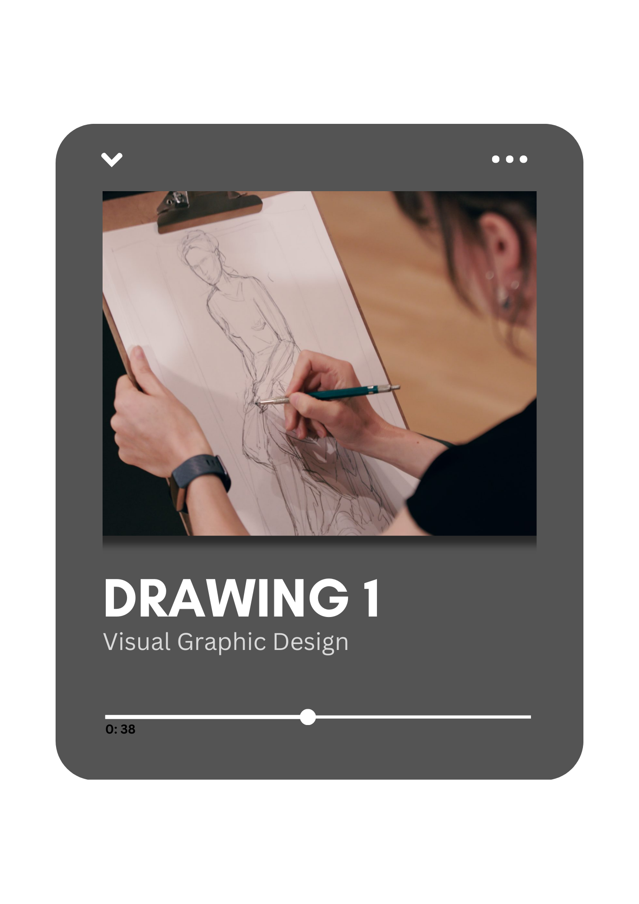
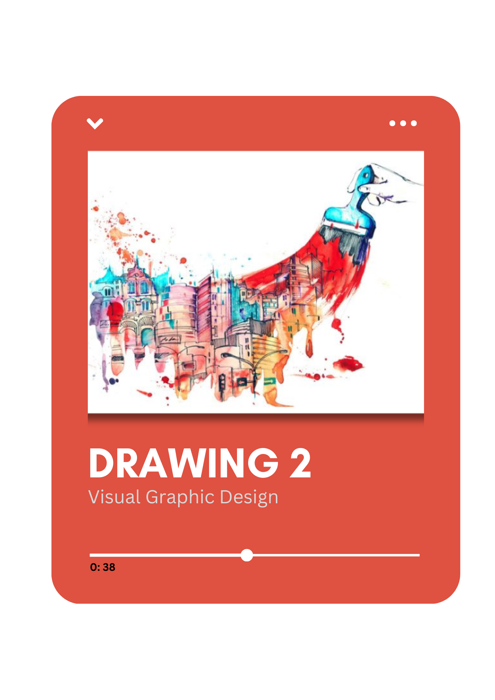
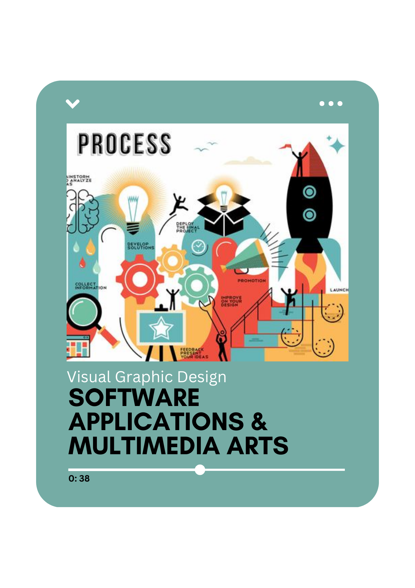
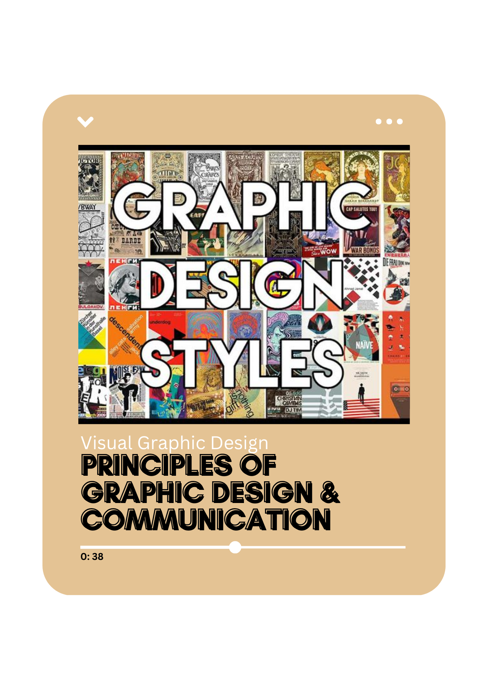
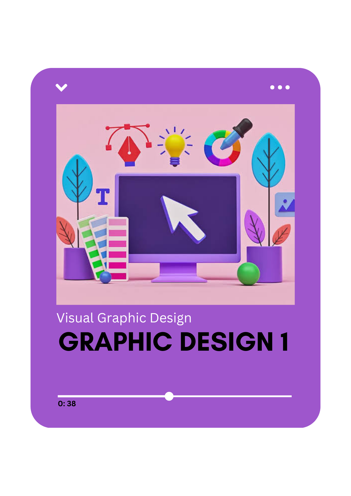
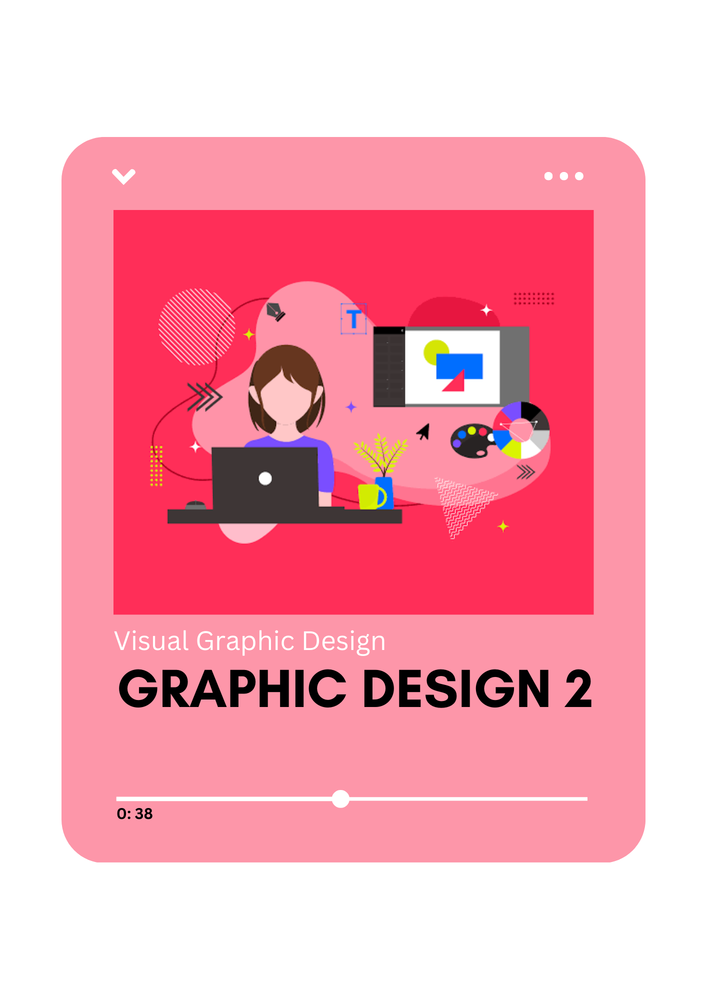
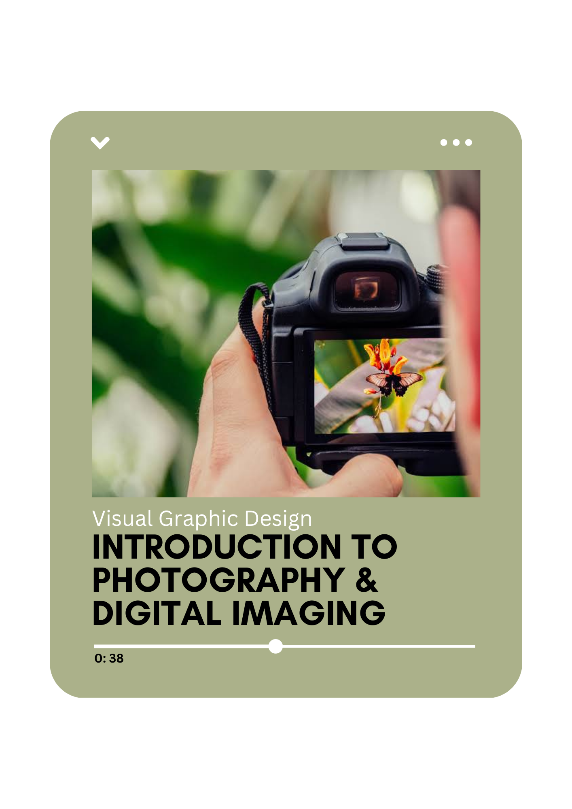
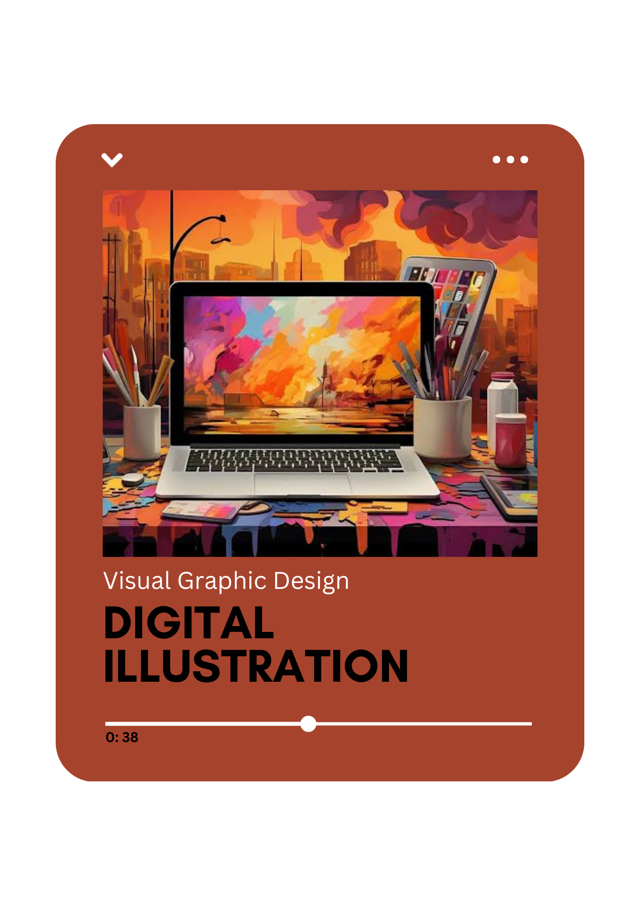
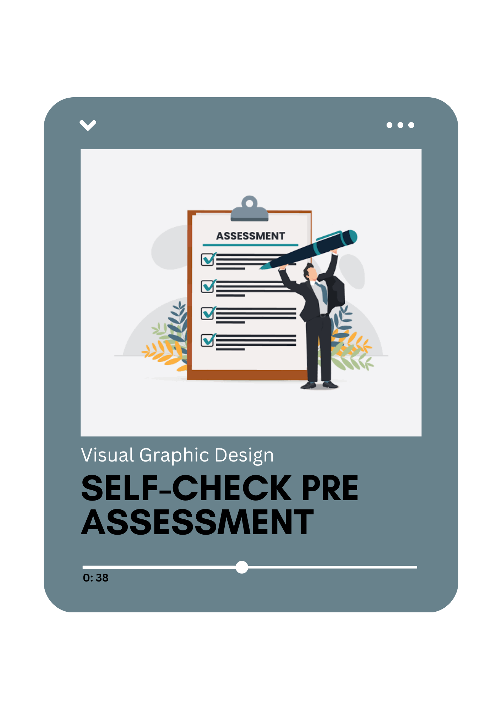
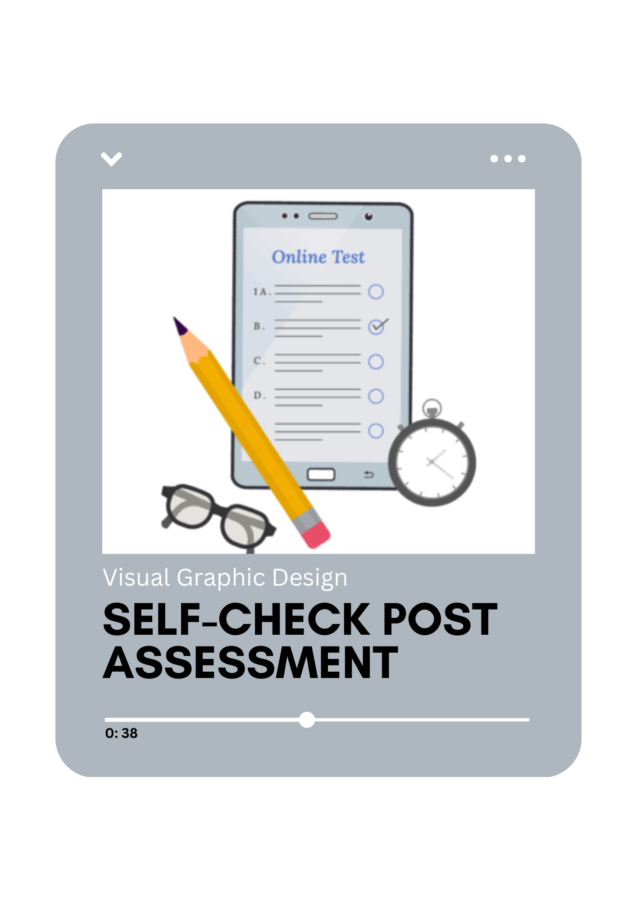

About
This eModule website resembles a book, delving into various topics in Visual Graphic Design, designed to guide students studying in this field. The key individuals behind this module are Ma. Christina, who summarizes and develops the topics for discussion with validation from our professor, Ranz. Following this, Henaery and Marco elaborate on and discuss the topics provided by Ma. Christina. Harold is responsible for creating the website and encoding the discussions, while Fritz produces video discussions based on the conversations between Henaery and Marco. The aim of this eModule website is to aid individuals studying Visual Graphic Design by providing easy-to-access and reliable learning materials. Currently, the website is in its prototype stage, inviting feedback and suggestions for improvement. If you have any tips or would like to contribute to creating a platform that facilitates accessible learning, we encourage you to reach out via the contact section."Courses
|  |  |  |  | 
| ||
|---|---|---|---|---|---|---|
|  |  |  |  |  | ||
|  | ||||||
- Introduction to Drawing
- Introduction to Basic Drawing techniques
- Understanding the Line, Shape, and Form
- Figure Drawing Fundamentals / Gesture Drawing
- Perspective Drawing
- Portraiture
often regarded as a cornerstone of visual art alongside painting and sculpting, offers a rich tapestry of creative expression. But is drawing as simple as putting pencil to paper? What are its fundamentals, techniques, and historical significance? Delve into the captivating world of drawing as we explore these questions and more.
What Is Drawing?
At its core, drawing is the art of creating lines or patterns on a flat surface. Yet, its definition transcends mere strokes of a pencil. Drawing encompasses observation, problem-solving, and creativity, serving as both a foundational skill for artists and a standalone art form. From sketching to intricate illustrations, drawing manifests in various styles and mediums, reflecting diverse artistic expressions.
The Basics of Drawing
From charcoal sketches to digital illustrations, drawing embraces a spectrum of techniques and tools. Whether wielding pencils, pens, or digital styluses, artists navigate a world of mediums and surfaces, from traditional paper to innovative digital canvases. Drawing serves not only as a means of creative expression but also finds practical applications in fields such as architecture, engineering, and animation.
The Historical Significance of Drawing
Drawing's rich history spans millennia, from ancient cave paintings to Renaissance masterpieces. It has evolved from primitive tools like burnt sticks to sophisticated mediums like ink and digital software. Across cultures and epochs, drawing has been a conduit for human expression, communication, and innovation.
Tools and Materials Required for Drawing
Embarking on a drawing journey requires minimal equipment: paper, pencils, and erasers serve as the artist's basic arsenal. However, a plethora of mediums—from charcoal to pastels—offers endless possibilities for artistic exploration. Whether sketching on paper or digitally rendering on a tablet, the tools of the trade enable artists to bring their visions to life.
Basic Techniques for Drawing
From hatching and stippling to blending and rendering, drawing techniques abound, each offering unique effects and textures. Mastery of these techniques empowers artists to convey light, shadow, and form with precision and nuance. Whether depicting a lifelike portrait or an abstract composition, understanding these fundamentals lays the groundwork for artistic excellence.
Understanding Line, Shape, Form, and Perspective in Drawing
At the heart of drawing lies an understanding of line, shape, form, and perspective. These elements form the building blocks of composition, enabling artists to create depth, volume, and spatial relationships within their artwork. Through careful observation and practice, artists hone their skills in representing the world around them with accuracy and flair.
The Different Types of Drawing
Drawing encompasses a diverse array of styles and genres, from realistic portraiture to abstract expressionism. Whether sketching from life or exploring imaginative realms, artists find endless avenues for creative exploration within the realm of drawing. Each style offers its own challenges and rewards, inviting artists to push the boundaries of their craft.
As we embark on this exploration of drawing, we invite you to unleash your creativity, hone your skills, and discover the boundless possibilities of this timeless art form. Whether you're a novice or seasoned artist, the journey of drawing promises endless inspiration and fulfillment. Join us as we delve deeper into the captivating world of drawing.
Unlock your artistic potential with these essential drawing techniques! Whether you're a novice or seasoned artist, mastering these skills will elevate your artwork to new heights. From basic shading to advanced line control, these techniques will empower you to bring any subject to life on paper. Let's dive into the world of drawing and unleash your creativity!
The ability to draw is not only essential but also captivating for anyone passionate about art. It serves as the foundation for all other art forms and provides the means to create stunning visual masterpieces.
By grasping the fundamental elements of drawing—such as line, shape, value, color, and texture—anyone can develop a solid knowledge base to create captivating works of art.
Drawing encompasses a vast array of techniques, each serving a unique purpose in the creative process. Whether you're sketching, shading, or blending, mastering these techniques requires dedication and practice. Here are some essential drawing techniques every artist should know:
1. Gesture Drawing - Capture the essence of movement with quick, expressive strokes, ideal for depicting people and animals.
2. Contour Drawing- Use continuous lines to outline the edges of your subject, focusing on capturing its overall shape and form.
3. Cross-Hatching - Create depth and texture by layering parallel lines in multiple directions, varying the pressure and spacing for added dimension.
4. Stippling - Build up shading and texture using small, intricate dots, perfect for achieving detailed and realistic effects.
5. Sketching - Lay down light, preliminary strokes to map out your composition and proportions before refining your drawing.
6. Shading - Add depth and volume to your artwork by layering dark and light tones, gradually building up contrast and form.
7. Blending - Achieve seamless transitions between tones by smudging or blending your pencil strokes, creating a smooth and cohesive look.
8. Scribble - Create texture and shading with quick, irregular lines, perfect for capturing rough surfaces and organic forms.
9. Back and Forth - Build up tone and texture with rapid, continuous strokes, ideal for creating smooth gradients and subtle variations.
10. Hatching - Use parallel lines of varying length and weight to add shading, texture, and contrast to your drawings.
11. Free Hatching - Add depth and dimension with rapid, irregular lines that follow the contours of your subject, creating dynamic textures.
12. Tonal Scribbles - Create detail and texture by layering scribbled lines over your drawing, perfect for adding depth to hair, fur, and clothing.
13. Dots - Build up shading and texture with carefully placed dots, ideal for creating stippled effects and smooth gradations of color.
14. Smudging - Blend and soften your pencil strokes with a blending tool or finger, creating soft transitions and atmospheric effects.
By mastering these essential drawing techniques, you'll have the skills and confidence to create captivating artworks that captivate and inspire. Remember, practice and experimentation are key to honing your craft, so don't be afraid to explore new techniques and push the boundaries of your creativity. With dedication and passion, you'll unlock your full artistic potential and create works of art that leave a lasting impression.
In the website of stevein Arts he mention a 5 basic drawing skills that can help a beginner artist, providing insights into each: Basic Shapes and Proportions: Emphasizes starting with simple shapes and forms to understand proportions, essential for deconstructing complex subjects. Lines and Contouring: Highlights the importance of lines in shaping visual narratives and contouring in bringing drawings to life by outlining edges and defining shapes.
Understanding Light and Shadow: Compares mastering light and shadow to a chef balancing flavors, stressing the importance of creating depth and realism in drawings.
Perspective Drawing: Discusses how perspective drawing creates depth and space in artwork, suggesting practicing different perspectives to enhance skills.
Observation and Creativity: Underscores the significance of observation in improving drawing skills and encourages embracing creativity and experimentation to develop a unique artistic style.
He also concludes by encouraging continuous practice, exploration, and drawing as a means to express imagination on the canvas of the world.
Understanding line, shape, and form
Understanding line, shape, and form is essential for any artist or designer, as these elements form the foundation of visual composition. Let's delve deeper into each of these elements and explore their significance:
1. Line
Lines are the most basic element of art and design, representing the path of a point moving through space.
They can convey various emotions and moods, from tranquility (horizontal lines) to dynamism (diagonal or wavy lines).
Different line qualities, such as solid, dashed, straight, or rough, can communicate different characteristics and messages.
Lines can be used to organize space, lead the viewer's eye, or create visual interest and emphasis within a composition.
2. Shape
Shapes are defined areas that stand out from their surroundings due to contrast, such as differences in color, value, or lines.
They can be geometric or organic and play a crucial role in defining the overall structure and composition of an artwork or design.
Rectangular shapes are prevalent in software and web design, conveying stability and organization, but breaking away from this grid can add visual interest and draw attention to specific elements.
3. Form
Form refers to the three-dimensional representation of objects or figures in space, created through techniques like shading, perspective, and texture.
While software interfaces typically exist in two-dimensional space, techniques like shading and perspective can create the illusion of depth and form.
Technologies like WebGL and virtual/augmented reality further blur the lines between two-dimensional and three-dimensional space, making form more relevant than ever.
3D geometric shapes and spatial arrangements can be used to add depth and dimension to designs, guiding the viewer's attention and creating immersive experiences.
By understanding the principles of line, shape, and form, artists and designers can effectively manipulate visual elements to communicate their intended messages, evoke emotions, and create engaging compositions. Whether working on a traditional canvas or a digital screen, mastery of these fundamental elements is essential for creating compelling and impactful artwork.
Gesture drawing is indeed a fundamental skill for artists, especially those focusing on figure drawing.
How does the arm bend at the elbow? What angle is the shoulder in relation to the torso? Where does the weight shift as the model leans or twists? Gesture drawing encourages artists to observe and understand the dynamics of movement and anatomy rather than focusing solely on capturing details. By practicing gesture drawing regularly, artists can develop their observational skills, improve their understanding of human anatomy, and create more dynamic and expressive artwork.
Understanding Gesture Drawing
Gesture drawing is a method where artists make quick, simplified sketches of a subject, often a live human model, to capture the essence of the pose and movement. The purpose of gesture drawing is to focus on flow, movement, and overall expression rather than small details, resulting in dynamic and lively sketches.
Gesture drawing typically involves using simple materials like paper and a drawing tool, with live models being the traditional subjects. However, online resources and videos can provide alternative subjects for practice.
Five key tips for gesture drawing include keeping lines fluid, avoiding details, drawing from life whenever possible, minimizing erasing, and experimenting with different time limits for each drawing.
Practicing Gesture Drawing
To practice gesture drawing effectively, artists should find a distraction-free space, set up their model or subject in good lighting, choose appropriate time limits for drawing sessions, and focus on capturing the essence of each pose.
Sketching gesture drawings involves making quick, fluid lines that convey movement and energy, with an emphasis on capturing the overall pose rather than specific details.
After each drawing session, artists should review their sketches to identify strengths and areas for improvement, helping them refine their skills over time.
Differences Between Gesture, and Figure Drawing
Gesture drawing prioritizes flowing movement and expressive lines, often featuring sketchy and fluid sketches with less defined shapes.
Figure drawing encompasses any drawing of a figure, including gesture drawings, figure studies, and drawings of human anatomy.
Overall, mastering gesture drawing is essential for artists seeking to improve their figure drawing skills and capture the dynamic essence of their subjects. Through regular practice and experimentation, artists can develop their abilities to create expressive and engaging artwork.
Mastering drawing proportions and perspective is crucial for creating realistic and compelling artwork. Here's a breakdown of these fundamental skills and how to develop them:
1. Drawing Proportions
Start by closely observing your subject and breaking it down into basic shapes and forms. Pay attention to the relationships between these shapes and their sizes relative to each other.
Use techniques like sighting or measuring with your pencil or thumb to gauge proportions accurately. Compare the size of one part of the subject to another and transfer those measurements to your drawing.
Regular practice from observation will improve your ability to judge proportions accurately over time. Draw from life whenever possible to develop your skills in capturing realistic proportions.
Utilize tools like rulers, straightedges, and proportional dividers to assist you in measuring and maintaining accurate proportions in your drawings.
2. Perspective Drawing
Learn the basics of perspective, including one-point, two-point, and three-point perspective. Understand how objects appear smaller as they recede into the distance and how parallel lines converge towards a vanishing point.
Practice drawing simple geometric forms like cubes, cylinders, and spheres in perspective. This will help you grasp how perspective affects the appearance of objects in space.
Explore different viewpoints and angles to create dynamic compositions. Experiment with exaggerating perspective for dramatic effect or conveying a sense of depth in your artwork.
Study the works of master artists who excelled in perspective drawing, such as Leonardo da Vinci and Albrecht Dürer. Analyze their techniques and approaches to gain insights into incorporating perspective into your own drawings.
Basic Rules of Perspective
The first rule states that objects appear smaller as they move farther away from the viewer. This phenomenon is known as size reduction in perspective.
Parallel lines that are parallel to the viewer's line of sight, or the drawing plane, remain parallel in the drawing. This preserves the sense of parallelism in the scene.
However, parallel lines that are not parallel to the viewer's line of sight converge at vanishing points. These vanishing points are where parallel lines appear to meet in the distance, creating a sense of depth.
When multiple sets of parallel lines converge at different vanishing points, these points align along a horizontal line known as the horizon line.
Purpose of Perspective Drawing
Perspective drawing allows artists to create the illusion of depth and three-dimensional space on a two-dimensional surface, such as paper or canvas.
By understanding perspective, artists can accurately depict how objects appear to recede into the distance, creating a more convincing and realistic portrayal of space.
Mastery of perspective drawing is crucial for creating lifelike scenes in various artistic mediums, including drawing, painting, and digital art.
Elements of Perspective Drawing
Linear Perspective
This aspect of perspective drawing focuses on the organization of shapes in space using converging lines. It involves drawing or imagining lines that converge at a point on the horizon to create the illusion of depth and distance.
Aerial Perspective
Also known as atmospheric perspective, this element deals with the atmospheric effects on tones and colors to convey depth. It involves modifying the tones, hues, and contrasts of objects to simulate the effects of distance and atmospheric conditions.
Types of Perspective Drawing
One-Point Perspective
In one-point perspective, all parallel lines converge to a single vanishing point on the horizon line. This technique is often used for portraying scenes viewed directly from the front, such as buildings or streets.
Two-Point Perspective
Two-point perspective involves two vanishing points located on the horizon line. This technique is suitable for depicting scenes viewed at an angle, such as cityscapes or interiors.
Three-Point Perspective
Three-point perspective incorporates a third vanishing point above or below the horizon line. This technique is used for portraying scenes with extreme viewpoints, such as looking up at skyscrapers or down into a deep chasm.
By mastering the principles of perspective drawing, artists can create captivating artworks that effectively convey depth, dimension, and realism. Whether portraying urban landscapes, natural vistas, or imaginative worlds, a strong understanding of perspective enhances the visual impact and storytelling potential of the artwork.
By dedicating time to practicing drawing proportions and perspective, you'll develop the skills needed to create artwork that is both accurate and visually engaging. Remember to be patient with yourself and to continue learning and experimenting as you refine your drawing abilities.
Facial expression plays a crucial role in conveying emotion and personality in a portrait. Whether the sitter appears happy, sad, contemplative, or determined can profoundly influence the viewer's perception of the subject. Similarly, the gesture or pose adopted by the sitter can provide insight into their character or activities. Clothing choice also contributes to the narrative of the portrait, reflecting the sitter's social status, occupation, or personal style.
When analyzing a portrait artwork, the details can provide valuable insights into the subject's life and character:
Facial Expression - The sitter's facial expression can convey a range of emotions, from happiness or sadness to contemplation or sarcasm. A lively expression might suggest a cheerful or energetic personality, while a tired or peaceful expression could indicate a sense of calm or fatigue. An angry or menacing expression might hint at underlying tension or aggression.
Gesture or Pose - The sitter's posture and actions offer clues about their activities and interests. Whether they are sitting still, standing, or engaged in a specific activity like riding a horse or holding a basket of flowers can reveal aspects of their lifestyle and hobbies. The direction of their gaze can also suggest their focus or attention.
Clothing - The sitter's attire provides insights into their social status, occupation, or personal style. Fancy clothes or military regalia might indicate a formal or prestigious role, while modest or tattered clothing could suggest more humble circumstances. The fashion style can also give hints about the time period or cultural context of the portrait.
Setting - The location of the portrait, whether indoors or outdoors, and the characteristics of the surroundings offer context for the sitter's life. Shabby or elegant settings, modern or dated environments, and specific locations like a kitchen or a mountain peak provide additional information about the sitter's lifestyle and background.
Objects - Other objects in the painting can further enrich the narrative of the portrait. The type of chair or furniture the sitter is using, any items they are holding, and any prominent objects in the background can add layers of meaning to the artwork. These objects may symbolize the sitter's interests, activities, or personal belongings, helping to paint a more complete picture of their life.
By examining these details in the artwork, viewers can piece together a deeper understanding of the sitter's personality, social context, and lifestyle, allowing them to connect more intimately with the portrait and its subject.
Additionally, the setting of a portrait can convey significant information about the subject's environment and lifestyle. Whether indoors or outdoors, modern or historical, elegant or humble, the surroundings add context to the portrait. Objects included in the painting further enrich the storytelling, offering visual cues that enhance the viewer's understanding of the sitter's identity and interests.
Portraits can be rendered in various styles, each with its own visual impact and emotional resonance. Realistic portrayals aim to faithfully capture the subject's likeness, while expressionistic approaches prioritize conveying mood and emotion. Artists may experiment with color schemes, brushstroke techniques, and levels of detail to evoke different responses from the viewer.
Furthermore, portraits can vary in composition, pose, and size, allowing for endless creative possibilities. From full-figure compositions to close-up views, and from conventional poses to unconventional angles, each decision influences the viewer's interpretation of the artwork. Whether intimate miniature paintings or monumental outdoor installations, portraits serve as powerful reflections of individuals and their stories.
Portrait drawing and painting offer a rich exploration of human expression, personality, and identity. Through careful attention to detail, composition, and technique, artists create captivating artworks that engage viewers and invite them to contemplate the complexities of the human experience.
Tips how to draw and create a portrait 1. Measure Proportions: Start by measuring the width-to-height ratio of the model's head and decide on the composition of the portrait. 2. Divide Face: Divide the face into three equal parts to correctly place facial features. 3. Place Eye-Line: Determine the eye-line, which divides the head vertically in half. 4. Establish Base of Skull: Mark the base of the skull and the edge of the cheekbone to connect the head, neck, and shoulders correctly. 5. Mark Lower Cranium: Indicate the lower part of the cranium, even if it's hidden. 6. Locate Eyebrow: Find the location of the eyebrow and define the contours of the face. 7. Outline Ear: Mark the top edge of the ear and ensure it's correctly positioned. 8. Draw Neck Anatomy: Indicate the pit of the neck and understand the importance of neck muscles. 9. Define Trapezium: Outline the trapezium muscle, which defines the shape of the back of the neck. 10. Outline Neck and Collarbones: Draw the outlines of the neck and collarbones, following constructive drawing principles. 11. Draw Base of Neck: Mark the circular shape of the base of the neck, which separates neck and shoulder planes. 12. Render Main Shades: Begin rendering the main shades of the portrait, focusing on larger areas. 13. Draw Eyebrows: Outline the eyebrows, paying attention to individual shapes. 14. Outline Cheekbones: Define the contours of the cheekbones, observing the model's unique features. 15. Outline Chin: Sketch the outlines of the chin, ensuring symmetry and proportion. 16. Draw Forehead Curve: Indicate the curve of the forehead, which helps define the bridge of the eyebrows. 17. Shade Eyebrow Area: Apply light shading below the eyebrows to differentiate planes of the head. 18. Define Cheekbones Curve: Draw the curve of the cheekbones, separating the frontal and side planes of the face. 19. Shade Below Cheekbones: Shade below the cheekbones to differentiate tonal values. 20. Draw Central Face Line: Mark the central line of the face, guiding the placement of facial features. 21. Mark Eyebrow Corners: Define the corners of the eyebrows, ensuring symmetry and proportion. 22. Outline Eyelids: Draw the outlines of the eyelids, following the curvature of the eye. 23. Shade Above Eyelids: Shade above the eyelids to indicate shadow and depth. 24. Mark Eye Corners: Pinpoint the corners of the eyes, ensuring symmetry and proportion. 25. Draw Eyelashes: Sketch eyelashes with a single curved line, avoiding excessive detail. 26. Draw Nose: Simplify the nose as a prism shape, observing the model's unique features. 27. Place Mouth: Use proportions to accurately place the mouth, paying attention to symmetry. 28. Draw Lips: Outline the upper and lower lips, ensuring they follow natural curvature. 29. Shade Mouth Area: Apply light shading to differentiate planes of the mouth. 30. Draw Mouth in Perspective: Understand how to draw a mouth in perspective, maintaining symmetry and proportion. 31. Outline Ears: Sketch the outline of the ears, ensuring proper proportions. 32. Define Head Plane: Mark the curve where the forehead transitions into the side plane of the head. 33. Shade Temple: Shade the temple area to differentiate tonal values. 34. Draw Hairstyle: Indicate the volume of the hair, following the contours of the head. 35. Render Tonal Values: Gradually render tonal values, starting with larger areas and progressing to smaller details. 36. Add Small Details: Work on smaller details, ensuring they complement the overall composition. 37. Finish Drawing: Decide when to finish the drawing, ensuring it's visually complete but not overworked.
- Character Design
- Advance Figure Drawing
- Landscape Drawing and Composition
- Drawing with Various Medium(Charcoal, Pencils, Ink, etc)
Color Selection and Emotion Choosing color schemes based on color psychology helps convey emotions and first impressions effectively. By considering these factors and utilizing Clip Studio Paint's tools and features, artists can bring their characters to life and create engaging narratives that captivate their audience.
If you are just learning how to draw, then you must master the fundamentals of drawing. The basics of drawing include form, composition, perspective, and lighting.
Advanced drawing is simply using drawing techniques that go beyond the basics to push your artistic skills to the next level. As you work your way through advanced drawing ideas, you will learn to refine your sketches into polished artwork. Here are some advanced drawing ideas to help you refine your skills:
Draw a Boot
Challenge yourself with textures and shading to create a realistic depiction of a boot, exploring techniques like hatching and cross-hatching.
Draw a Majestic Mandala
Create intricate circular patterns inspired by nature, learning how to build mandalas using a circular grid and framework.
Draw Using Da Vinci's Drawing Techniques
Explore Leonardo da Vinci's drawing methods, including gesture, proportion, sfumato, and hatching lines, to refine your drawing skills.
Draw an Intricate Eye
Practice drawing complex shapes and tonalities using colored ballpoint pens and pencils, focusing on controlling hand pressure and cross-hatching techniques.
Try out Typography
Challenge yourself by creating hand-lettered typography, exploring the rules of letterform to develop unique and expressive lettering styles.
Draw a Face
Master drawing facial features and expressions by sketching faces, whether it's a self-portrait, a loved one, or a fictional character.
Draw Your Own Comic Book
Tell a compelling story through sequential art, learning how to connect advanced drawings with narrative elements to create engaging comics.
Draw Plants and Leaves
Study botanical illustrations to understand leaf structures and shapes, connecting with nature while practicing 2D and 3D drawing techniques.
Create a One-Line Drawing
Challenge yourself to complete an entire drawing with one continuous line, exploring a calm and focused approach to drawing.
Draw an Original Fashion Design
Learn the basics of fashion drawing, sketching garments, fashion figures, and accessories to create your own fashion designs.
Draw a Bird
Practice defining angles, postures, and details by sketching birds, honing your observation skills while capturing the beauty of nature.
Draw an Acanthus
Explore decorative motifs like the acanthus leaf, creating intricate patterns and designs inspired by nature and architecture.
Draw Your Own Travel Map
Design a hand-drawn map of your favorite location, incorporating icons and landmarks to create a personalized and artistic representation.
Draw From a Photo
Turn a photo into a drawing, practicing your drawing skills by recreating shapes, details, and textures from real-life images.
Draw an Imaginary World or Character
Let your imagination run wild by creating concept art of imaginary worlds or characters, blending real-life experiences with creative storytelling.
By exploring these advanced drawing ideas, you'll continue to refine your artistic skills and develop your own unique style and voice as an artist.
Figure drawing is a foundational practice in illustration that involves sketching the human figure, typically with a live model. This practice helps artists develop their skills in capturing the essence of the human body's musculature, texture, and postures.
Discover Foundational Shapes: Figure drawing teaches you to replicate foundational shapes like lines, ovals, and squares. Manipulating these shapes is crucial for accurately representing the human form.
Bolster Your Understanding of Anatomy: By drawing figures, you'll learn about the underlying structures of muscles and bones. Understanding anatomy is essential for creating lifelike and dynamic illustrations.
Capture Movement, Weight, Balance, and Tension: Figure drawing challenges you to capture the action and dynamics of the human body. You'll learn to convey movement, balance, and tension through your drawings, enhancing the realism and impact of your illustrations.
Learn to See Living Things: Through figure drawing, you'll develop the ability to observe and convey natural motion in your illustrations. Techniques like foreshortening and dynamic posing will help you create more dynamic and engaging artwork.
Landscape drawing and composition is the art of arranging the various elements within a scene to create a visually appealing image. Many different rules and guidelines can be followed when composing a landscape photograph, but ultimately it is up to the photographer to decide what looks best. However, there are some basic rules and examples that can help you create a well-balanced and aesthetically pleasing image.
The basics of landscape composition are crucial for creating visually appealing and balanced paintings. Here's a breakdown of key principles and techniques:
>Balancing Your Painting
>Aim for a strong center of interest or focal point that directs the viewer's attention. Use elements like sky, trees, and flowers to lead the viewer back to the focal point and create a sense of depth.
>Symmetrical vs. Asymmetrical Balance
>Understand the two types of balance in composition. Symmetrical balance creates a visually stable and calming effect, while asymmetrical balance can add interest, informality, or tension to a painting.
Composition Guidelines
Familiarize yourself with compositional guidelines like the rule of thirds and the golden section. These rules can help you create visually pleasing arrangements, but don't be afraid to break them for creative purposes.
Using a Viewfinder
Utilize a viewfinder to frame your composition and experiment with different arrangements. Adjust the viewfinder to achieve symmetrical or asymmetrical compositions, vertical or horizontal orientations, etc.
Rule of Thirds
Place the main focus of interest at intersections of imaginary lines dividing the painting into thirds horizontally and vertically. This creates a more dynamic composition than placing the focal point in the center.
Golden Section
Apply the golden ratio (1:1.618) to distribute weight and position the main subjects in your painting. This mathematical formula creates aesthetically pleasing compositions used by artists since the Renaissance.
Simplification and Reduction
Simplify your composition by reducing elements to only what is necessary to express your subject or idea. This helps create a more powerful and impactful visual statement.
Composition Design Checklist
Consider various elements such as balance, light and shadow (value), perspective, harmony, rhythm, texture, and contrast while composing your landscape. Regularly review your composition against this checklist for optimal results.(Look for the Table below checklist)
Tip for Checking Composition:
Use a mirror to view your painting from a different perspective, turning your back toward the scene and easel. This allows you to identify skewed elements, alignment issues, color balance, etc., and make necessary adjustments.
By mastering the basics of landscape composition and applying these principles and techniques, you can create captivating and harmonious paintings that engage viewers and convey your artistic vision effectively.
Landscape Drawing Composition Rules
Center of Interest:
Choose a focal point that stands out and draws attention.
Use strong colors and contrast to enhance the center of interest.
Surrounding elements should lead the viewer's eye to the focal point.
Second Center of Interest:
Optionally, include a secondary focal point, but be cautious of competition with the primary one.
Avoid Pushing Viewer Out:
Ensure elements within the composition direct the viewer's gaze inward, avoiding exits from the frame.
"S" Movement:
Incorporate rivers, roads, or other lines with a gentle, flowing "S" shape for a more visually pleasing effect.
Visual Impact:
Prioritize visual impact over strict realism, using techniques like distorted perspective if necessary.
Depth:
Create depth through techniques like overlapping objects, atmospheric perspective, and variations in size and definition.
Dark & Light:
Reserve strong value contrasts for the focal point to avoid distractions elsewhere.
Space:
Include areas of rest within the composition to balance visual complexity.
Movement and Indication:
Incorporate elements that suggest movement, but avoid unrealistic poses or positions.
Visual Path:
Guide the viewer's gaze using visual paths that align with typical reading patterns.
Common Errors and Solutions:
Avoid symmetry, duplication, and unnatural alignments to maintain visual interest and realism.
Advice on Color:
Mix colors directly on the canvas for more dynamic results.
Limit hues within specific areas to maintain color harmony.
Create brightness by applying paint thickly (impasto) in well-lit areas.
Improvement Tips:
Simplify details for a more impactful composition.
Vary forms and balance masses to avoid visual imbalance.
Consider nature's lessons but adapt as needed for artistic effect.
These guidelines offer a comprehensive framework for composing visually appealing landscape artworks while allowing for individual creativity and interpretation.
From traditional mediums like oil painting and charcoal to modern approaches such as mixed media and digital art, artists have a wide array of options to choose from when deciding how to bring their visions to life. The guide emphasizes the importance of selecting a medium that aligns with one's artistic identity and message while also ensuring enjoyment and satisfaction in the creative process.
It highlights the diversity and richness of artistic expression across different mediums and encourages artists to explore and experiment with various techniques to find their unique voice in the art world.
In the following information discuss each example of a medium in use of creating drawing and painting it also discusses the description and characteristics of each medium.
Temper
Description: Tempera refers to paint mixed with cohesive materials like egg yolk. It's known for its fast-drying and long-lasting properties
Characteristics: Tempera dries quickly, allowing for fine details and intricate work. It's often used on wood panels and provides a smooth, matte finish.
History: Evidence of tempera artworks dates back to the 1st century A.D., making it one of the oldest painting mediums.
Oil Painting
Description: Oil painting involves pigments mixed with a drying oil, typically linseed oil. It's known for its slow drying time, which allows for blending and layering.
Characteristics: Oil paints have a rich, vibrant color and can be applied in thin glazes or thick impasto layers. They offer artists flexibility in blending colors and correcting mistakes.
History: Oil painting gained prominence as an artistic medium in 15th century Europe.
Acrylic Painting
Description: Acrylic paint consists of pigments suspended in acrylic polymer emulsion. It dries quickly to a water-resistant finish.
Characteristics: Acrylic paints dry fast, allowing for quick layering and experimentation. They can be diluted with water for a watercolor effect or layered for added texture and depth.
Watercolors
Description: Watercolor paints are made from pigments suspended in a water-based solution. They are translucent and known for their luminous quality.
Characteristics: Watercolors are challenging to control due to their fluid nature but offer a unique vibrancy and transparency. They are ideal for capturing the play of light and atmosphere.
Charcoal Description: Charcoal sticks are made of powdered organic material bound with wax or gum. They come in various grades of hardness.
Characteristics: Charcoal is versatile, allowing artists to create both delicate lines and bold, expressive marks. It's easily erasable and can be used for quick sketches or detailed drawings.
Pastels
Description: Pastels consist of pigment mixed with a binding material. They come in various forms, including soft, hard, and oil pastels.
Characteristics: Pastels offer rich, vibrant colors and can be blended to create soft transitions. Soft pastels are ideal for blending, while oil pastels provide intense, opaque color.
Chalk
Description: Chalk is an organic material available in black, white, and sanguine varieties. It's commonly used for drawing and sketching.
Characteristics: Chalks allow for expressive drawing with varying degrees of hardness. They are versatile and can be used for both detailed work and broad strokes.
Graphite Pencils
Description: Graphite pencils contain graphite mixed with clay. They come in various degrees of hardness, from soft to hard.
Characteristics: Graphite pencils are versatile and allow for precise lines, shading, and blending. They are erasable, making them suitable for sketching and detailed drawings.
Colored Pencils
Description: Colored pencils contain pigment encased in a wax or oil-based binder. They come in a wide range of colors and intensities.
Characteristics: Colored pencils offer control and precision, allowing artists to create detailed and vibrant artwork. They can be layered and blended to achieve various effects.
Pen and Ink
Description: Pen and ink involve using a pen to create lines and adding ink for color or shading. It's commonly used for drawing, illustration, and calligraphy.
Characteristics: Pen and ink drawings are precise and expressive, with a balance of ink-filled and blank spaces. Different types of pens and inks offer varying line weights and textures.
These are some of the traditional painting and drawing mediums discussed in the guide, each offering unique characteristics and techniques for artists to explore and experiment with in their creative endeavors.
- Introduction to Multimedia Arts
- Adobe Photoshop
- Adobe Illustrator
In advertising, multimedia is extensively utilized in print, electronic, and digital formats, including print advertisements, radio commercials, television commercials, and online marketing strategies like display advertising and social media campaigns. In the realm of education, multimedia is revolutionizing traditional teaching methods by incorporating audio and visual elements into classroom instruction, making learning more interactive and engaging. Additionally, multimedia finds widespread use in mass media, particularly in journalism, where it enhances publications with images, videos, and interactive content, enriching the reader's experience.
The gaming industry also heavily relies on multimedia, with advancements in technology enabling immersive gaming experiences through integrated audio and video effects. Moreover, multimedia has significant applications in technology and science, facilitating communication, document preparation, and interactive engagement through hypermedia, ultimately saving time and resources while enhancing productivity and collaboration.
Overall, multimedia's versatility and effectiveness make it an indispensable tool across various sectors, shaping the way information is communicated, shared, and experienced in today's digital age.
What is Multimedia?
Multimedia is derived from "multi," meaning many, and "media," referring to distribution tools and information presentation. It encompasses various forms of media used to convey information. Multimedia is also defined as a combination of text, graphic, sound, animation, and video delivered interactively to users through electronic or digitally manipulated means.
5 Elements of Multimedia
Text: Basic element for expressing ideas.
Graphic: Two-dimensional illustrations or figures.
Audio: Sounds produced by vibration, including speech, sound effects, and music.
Animation: Illusion of motion created by displaying consecutive images.
Video: Moving pictures captured, recorded, and reconstructed using technology.
Interactive Multimedia
Users have control over elements and navigation, enhancing the user experience. Hypermedia combines hypertext, graphics, audio, video, and interactivity.
Linear VS Non-Linear
Linear: Non-interactive, users have no control over content (e.g., movies).
Non-Linear: Interactive, users control content and navigation (e.g., games, interactive CDs).
Authoring Tools
Tools used to merge multimedia elements into projects and provide user interaction.
Examples include Macromedia Authorware, Director, Flash, and Microsoft PowerPoint.
Importance of Multimedia
Utilized in various fields such as business, education, entertainment, home, and public places.
Examples include sales presentations, educational courseware, games, movies, and information kiosks.
Multimedia Products
Briefing Products: Concise presentations for quick information dissemination.
Reference Products: Information browsing tools with search and navigation features.
Database Products: Manage multimedia data with descriptive finding methods.
Education and Training Products: Textbooks or manuals enhanced with multimedia.
Kiosk Products: Interactive information stations for public use.
Entertainment and Games: Immersive experiences requiring constant interaction.
Delivering Multimedia
Requires large storage and band width for delivery and distribution.
Delivery methods include CDs, DVDs, flash drives, and broadband internet.
As you delve into Adobe Photoshop, you'll discover that there are often multiple ways to accomplish the same task. Instead of feeling overwhelmed by the various methods, focus on finding the one that suits your workflow best. Whether it's through keyboard shortcuts, right-clicking, menus, or icons, the choice is yours on how to utilize the tools available to you.
Photoshop Panels
In Photoshop, panels are like containers that hold various tools and settings for different functions. These panels are typically located on the right-hand side of the workspace by default. Examples of panels include the Layers panel, the Adjustments panel, the History panel, etc. Each panel serves a specific purpose and can be expanded or collapsed as needed.
Photoshop Tools
The tools in Photoshop are located on the left-hand side of the workspace. These tools are used for performing various tasks such as selecting, painting, editing, and more. Examples of tools include the Move Tool, the Brush Tool, the Clone Stamp Tool, etc. Each tool has its own unique function and can be selected by clicking on its icon in the Tools panel.
Options Bar
The Options Bar is located across the top of the workspace, just below the menu bar. It displays the most commonly used parameters and options for the currently selected tool. For example, if you have the Brush Tool selected, the Options Bar will show settings such as brush size, opacity, blending mode, etc. The options displayed in the Options Bar change dynamically based on the selected tool.
Standard Menu Bar
At the very top of the Photoshop application window, you'll find the standard menu bar. This bar contains menus such as File, Edit, Image, Layer, Select, Filter, View, Window, and Help. Each menu contains a list of commands and options for performing various tasks within Photoshop.
Let's dig deeper into it!
Tools Panel: When you start Photoshop, the Tools panel is displayed on the left side of the screen. This panel contains various tools for performing different tasks such as selection, painting, retouching, etc.Options Bar: Some tools in the Tools panel have associated options that appear in the context-sensitive options bar. This bar is located at the top of the workspace and displays settings relevant to the currently selected tool.
Hidden Tools: Certain tools in the Tools panel can be expanded to reveal hidden tools beneath them. A small triangle at the lower right of the tool icon indicates the presence of hidden tools.
Tool Information: You can view information about any tool by hovering the pointer over it. A tooltip displaying the name of the tool appears below the pointer, providing a brief description.
Rich Tooltips: Photoshop now offers rich tooltips for certain tools, providing a description and a short video demonstration of the tool in action when you hover over it. This feature makes it easier for users to understand what each tool does.

Toolbar Customization: Users can customize the Photoshop toolbar to organize tools in groups and perform other actions. This can be done by accessing the Customize Toolbar dialog through the Edit menu or by long-pressing on the toolbar.
In the Customize Toolbar dialog box, do one or more the following:
Drag and drop tools and/or groups to re-organize the toolbar.
Move excess, unused, or low priority tools to Extra Tools.
To access extra tools, long press at the bottom of the toolbar.
To save the custom toolbar, click Save Preset.
To open a previously saved custom toolbar, click Load Preset.
To restore the default toolbar, click Restore Defaults.
To move all the tools to Extra Tools, click Clear Tools.
Select the non-tool widgets to show/hide them at the bottom of the toolbar.

A. Show/Hide Extra Tools | B. Show/Hide Foreground/Background Colors | C. Show/Hide Quick Mask Mode | D. Show/Hide Screen Mode
Customization Options: Within the Customize Toolbar dialog, users can rearrange tools and groups, move excess or unused tools to the Extra Tools section, save custom toolbar presets, load saved presets, restore default settings, clear tools, and show/hide non-tool widgets at the bottom of the toolbar.
Non-Tool Widgets: The non-tool widgets at the bottom of the toolbar include options to show/hide Extra Tools, foreground/background colors, Quick Mask Mode, and Screen Mode.
Tool galleries
Selection tools
Crop and slice tools
Retouching tools
Painting tools
Drawing and type tools
Navigation, notes, and measuring tools
3D tools gallery
Selection tools

Move Tool
The Move Tool allows you to move selections or entire layers within your Photoshop document. You can click and drag to move objects around the canvas.
Marquee Tools
Marquee tools include the Rectangular Marquee, Elliptical Marquee, Single Row, and Single Column. These tools are used to make selections in specific shapes: rectangular, elliptical, horizontal, or vertical.
Lasso Tools
Lasso tools consist of the Lasso, Polygonal Lasso, and Magnetic Lasso. These tools are used for making selections by hand. The Lasso tool allows for freehand selection, the Polygonal Lasso allows for selecting using straight lines between points, and the Magnetic Lasso snaps to the edges of objects as you drag around them.
Selection Tools

The Selection Tools Gallery includes tools like the Quick Selection, Magic Wand, and Object Selection tools. These tools are used to make selections based on specific criteria. The Quick Selection tool allows you to paint over an area to select similar tones and textures, the Magic Wand selects pixels based on color similarity, and the Object Selection tool intelligently selects objects in your image based on a rough outline you draw around them.
Use stamp tools like the Clone Stamp tool and Pattern Stamp tool to paint with pixels from another part of your image or from a selected pattern.

Clone Stamp Tool
The Clone Stamp tool is used to duplicate pixels from one part of an image and apply them to another part. To use it, you first specify the source area by alt-clicking on the desired location in the image. Then, when you paint with the Clone Stamp tool, it replicates the pixels from the source area onto the target area. This tool is particularly useful for removing unwanted elements from photos or for duplicating objects.
Pattern Stamp Tool
The Pattern Stamp tool allows users to paint with a pattern selected from Photoshop's preset patterns or a custom pattern. It works similarly to the Clone Stamp tool but instead of copying pixels from another part of the image, it uses the selected pattern to paint onto the canvas. This tool is useful for adding texture or decorative elements to an image.
Crop and slice tools
The Crop tool is an essential feature in image editing, offering a range of functions to adjust the size, composition, and perspective of images. Initially, it allows users to cut down the canvas to a desired size, enabling them to focus on the main subject and remove any unwanted elements from the frame. Additionally, it provides a Slice tool for dividing images into multiple sections, useful for managing large projects or exporting to other applications. Beyond simple resizing, the Crop tool facilitates straightening and rotation, correcting skewed horizons or aligning images properly. Moreover, the Perspective Crop tool allows for more advanced adjustments, warping and shifting the canvas along specific vantage points for realistic or creative effects. For users needing to expand the canvas, the Crop tool permits them to add more space around the main subject by dragging the crop bounds outward. They can then use Content-Aware Fill to intelligently generate background pixels based on surrounding content, seamlessly filling in the newly created space. Finally, the option to delete cropped pixels ensures that only desired elements remain in the final composition, simplifying further edits and reducing file size. Overall, the Crop tool provides users with a versatile set of features for precise and creative image manipulation.

Retouching tools
The retouching tools in Adobe Photoshop encompass a variety of functionalities crucial for enhancing and repairing images. These tools include the Clone Stamp, Pattern Stamp, Healing Brush, Patch, and Color Replacement. They serve different purposes, such as repairing damaged areas, applying repeated patterns, or replacing colors within an image.
In the toolbar, these retouching tools are arranged for easy access. However, if multiple tools occupy the same cell, only the icon for the last used tool is displayed. To select a different tool from those sharing a cell, users can right-click the mouse on the arrow next to the icon. Alternatively, holding down the mouse button on the icon will also prompt a menu to appear, allowing users to choose another tool.
The Clone Stamp tool and Healing Brush are particularly versatile. They enable users to clone or copy pixels from one part of an image to another, whether it's on the same layer, a different layer, or even in another image. Notably, the Healing Brush considers various factors such as texture, illumination, and shadows of the processed image. Consequently, the area processed by the Healing Brush tends to blend more seamlessly into the surrounding image, resulting in a more natural appearance.


Painting tools
Adobe Photoshop offers a comprehensive suite of tools for painting and editing image color, catering to various artistic and retouching needs. Among these tools are the Brush tool and the Pencil tool, which function similarly to traditional drawing instruments, applying color with brush strokes or precise lines, respectively. These tools allow users to create artistic effects, add details, or make precise edits to images.
In addition to the Brush and Pencil tools, Photoshop provides a range of other tools for modifying existing colors in an image. The Eraser tool, for instance, allows users to remove unwanted color or elements from an image. The Blur tool can be used to soften or blur specific areas of an image, while the Smudge tool can blend colors together or create smudged effects.
Within the options bar for each of these painting tools, users have control over how color is applied to an image. They can adjust settings such as brush size, opacity, flow, and blending mode to achieve the desired effect. Furthermore, users can choose from a variety of preset brush tips, each offering different textures, shapes, and characteristics, to customize their painting or editing workflow according to their preferences and project requirements. Overall, these painting and editing tools in Adobe Photoshop empower users to unleash their creativity and achieve professional-quality results in image color manipulation.


Drawing and type tools
The Drawing and Type tools in Adobe Photoshop are essential for creating and manipulating vector objects, providing users with versatile options for design and text manipulation. These tools operate on vector paths, which are scalable outlines that can be transformed into selections or shape layers. Users can choose between drawing paths or shape layers using the Options bar, enabling flexibility in their design workflow.
The Path Selection tool allows users to move entire paths as a single object while retaining their shape, facilitating precise adjustments and repositioning. Conversely, the Direct Selection tool enables users to select and manipulate individual points and Bézier handles of a path or shape layer, offering fine control over vector objects.
The Pen tool is instrumental in creating paths, allowing users to single-click to create individual points and drag to create Bézier curves, enabling the creation of complex shapes and designs. The Freeform Pen tool provides a more intuitive approach by automatically generating points as users click and drag, simplifying the path creation process.
The Add Anchor Point tool allows users to add points to a path, increasing detail and complexity, while the Delete Anchor Point tool removes points, refining the path's shape. The Convert Anchor Point tool offers further versatility, enabling users to convert points between corner and curve points, or to combination points, by single-clicking or clicking and dragging.
On the other hand, the Type tools facilitate text creation and manipulation within Photoshop. The Horizontal Type tool is the default option, allowing users to create text boxes and type within them using the keyboard. Users can customize text properties such as font, size, and alignment using the Options bar, with additional typography options available in the Character and Paragraph palettes.
For languages with vertical text direction, the Vertical Type tool provides similar functionality to the Horizontal Type tool but stacks text vertically from right to left. Additionally, the Horizontal Type Mask and Vertical Type Mask tools create selection areas rather than actual type, allowing users to paint within the selected area while restricting further adjustments to the type options after creation.
Overall, the Drawing and Type tools in Adobe Photoshop offer a comprehensive set of features for creating, editing, and manipulating vector objects and text, empowering users to realize their creative visions with precision and flexibility.


Navigation, notes, and measuring tools
In Adobe Photoshop, the navigation, notes, and measuring tools serve vital functions for efficiently handling and annotating images. Navigation tools are crucial for maneuvering around the canvas effectively. The Hand tool allows users to pan and move freely, while the Rotate View tool offers quick canvas rotation for varied perspectives. Additionally, the Zoom tool enables users to zoom in for detailed examination or zoom out for a broader view, aiding precise editing and overall composition assessment. Notes and annotation tools, such as the Notes tool, permit users to add text annotations directly onto the image canvas, facilitating collaborative editing and referencing. In some versions, an audio annotation tool may be available for attaching audio notes to specific image areas. For measurement and analysis, tools like the Ruler tool allow accurate measurement of distances and angles, crucial for scaling and alignment. The Count tool tracks object numbers within an image, useful for inventory or analytical purposes. Even the Eyedropper tool, primarily for color sampling, can provide precise color measurements for editing or design tasks. Together, these tools enhance workflow efficiency, accuracy, and collaboration in Adobe Photoshop, empowering users to navigate, annotate, and analyze images with ease.


3D tools
Adobe Photoshop offers comprehensive tools for understanding and displaying 3D files, enabling users to position, animate, and manipulate 3D models with ease.
3D Fundamentals
3D files comprise three main components. Firstly, meshes provide the structure of a 3D model, often depicted as wireframes composed of polygons. Photoshop allows users to view meshes in various render modes and manipulate them independently. Secondly, materials control the appearance of a mesh, utilizing texture maps to define properties such as color, pattern, and shininess. Lastly, lights, including infinite, spot, point lights, and image-based lights, illuminate the scene. Users can adjust existing lights and add new ones to enhance their 3D compositions.
Opening 3D Files
Photoshop supports various 3D formats like DAE, OBJ, 3DS, U3D, and KMZ. Users can open 3D files directly or add them as layers within an existing file, allowing seamless integration into projects.
Performance and Display Preferences
Users can fine-tune 3D performance and display preferences through Photoshop's settings, accessing options for optimal rendering and interaction with 3D elements.
3D Object and Camera Tools
When a 3D layer is selected, users can utilize object and camera tools to manipulate 3D models and change viewing perspectives. Object tools enable rotation, scaling, and repositioning of models, while camera tools control the viewpoint of the scene.
3D Axis
The 3D Axis provides a visual reference for the orientation of models, cameras, lights, and meshes in 3D space. Users can use the axis to move, rotate, or scale selected items accurately, facilitating precise adjustments within the 3D environment.


Adobe Illustrator is a versatile software program designed for drawing and graphic creation, accessible to users regardless of their artistic or computer proficiency. With Illustrator, you can effortlessly draw shapes, lines, import graphics, and manipulate text, making it a valuable tool for various projects ranging from book layouts to web page design. Illustrator specializes in creating and utilizing vector graphics, employing geometric primitives like points, shapes, and lines to represent images, offering scalability without loss of quality.
Creating a new document involves specifying document settings such as name, profile, artboard number, arrangement, and spacing through the Menu Bar.
The Toolbox, located on the left side of the screen, houses various tools categorized by their functions, while the Control Panel offers tool-specific options for customization and adjustment. The Application Bar provides access to menus like File, Edit, Object, and more, each offering a range of options tailored to specific actions or tasks. Panels flank the right side of the Illustrator window, offering additional functionalities and controls, which users can open by clicking on corresponding buttons.
Customizing the workspace involves rearranging document windows and panels to create personalized work environments conducive to workflow preferences. Illustrator permits users to set preferences to tailor the software to their specific needs and workflow habits, encompassing display settings, ruler units, tools, and more. Customizable keyboard shortcuts streamline workflow and enhance productivity.
Rulers, guides, and grids aid in precise alignment and measurement of objects within Illustrator, along with smart guides and snapping options to enhance alignment precision and efficiency. Ultimately, mastering Adobe Illustrator involves familiarizing oneself with its navigation, tools, and functionalities to efficiently create and manipulate vector graphics for diverse design projects.
Adobe Illustrator boasts an extensive array of tools, each serving specific functions to facilitate the design process. Upon launching Adobe Illustrator, users encounter a variety of tools used to apply changes to their projects. These tools encompass a wide range of functionalities, including drawing, typing, painting, selecting objects, modifying shapes, navigating the canvas, managing artboards, and organizing layers.
One significant aspect of Adobe Illustrator is the ability to use keyboard shortcuts to quickly activate these tools, streamlining the design workflow for increased efficiency and productivity.
Type of Tools bar
Illustrator provides the following types of toolbar:
Basic: This toolbar is displayed by default when Illustrator is launched. It includes a selective set of tools that you frequently need while working on Illustrator. To view the complete list of tools, select the Edit Toolbar (...) icon displayed at the bottom of the Basic toolbar. The All Tools drawer appears listing all the tools available in Illustrator.
Advanced: This toolbar includes all the tools available in Illustrator. To switch from the Basic toolbar to Advanced, do one of the following:
Select Window > Toolbars > Advanced.
Select Advanced in the flyout menu of the drawer.
(For MENA locales) If you are not able to view the MENA Type tools in the Basic toolbar, which is displayed by default, do one of the following to use these tools:
Open the All Tools drawer of the Basic toolbar by selecting the Edit Toolbar button and drag the MENA Type tools from the drawer to the toolbar.
Open the Advanced toolbar.

A. Basic toolbar | B. Advanced toolbar | C. All Tools drawer | D. Flyout menu | E. Tool category | F. Tool available in the toolbar | G. Tool available in the drawer
Types of tools in Illustrator
Tools in Illustrator are divided into six categories. Select any of these categories to learn about the tools within them.
Draw tools
Select tools
Navigate tools
Paint tools
Text tools
Modify tools
Drawing tools
Draw tools help you to draw and edit objects and paths, and create perspective. You can also add symbols and graphs to your artwork.


Selecting Tools
The selection of elements within artwork is a fundamental aspect of the design process. Before any modifications or edits can be made, it's essential to first select the desired elements. Adobe Illustrator offers a range of select tools that enable users to not only choose specific elements but also manipulate them in various ways. These select tools empower users to move, rotate, scale, and transform artwork with precision, catering to different design needs and preferences. Whether it's selecting individual objects, groups of objects, or entire layers, these tools provide flexibility and control over the editing process, allowing users to refine their compositions effectively. The ability to adjust elements with varying degrees of precision ensures that designers can achieve the desired visual outcome for their projects. Overall, select tools in Adobe Illustrator play a vital role in the design workflow, enabling users to interact with and modify their artwork efficiently and accurately.
Navigating Tools
In Adobe Illustrator, navigate tools are indispensable for controlling the view and focus of the artwork. These tools provide essential functionalities for manipulating the canvas and navigating through the design space. Users can perform basic actions such as zooming in or out to magnify or shrink the view, facilitating detailed work or getting an overview of the entire composition. Additionally, navigate tools enable users to rotate the view, offering alternative perspectives for better visualization and editing. They also allow users to drag artwork across the canvas, repositioning elements as needed. Furthermore, navigate tools provide options to add grids to the canvas, aiding in alignment and layout precision. Overall, navigate tools in Adobe Illustrator enhance the user experience by offering intuitive controls for adjusting the view and positioning of artwork, thereby facilitating smoother and more efficient design workflows.
Paint Tools
In Adobe Illustrator, paint tools play a role in adding color, texture, and visual interest to artwork. Illustrator provides a diverse range of vector brushes that enable users to apply fills and strokes to various elements within their compositions. These brushes offer versatility in creating different artistic effects, from smooth lines to textured strokes and everything in between. By utilizing brushes, users can enhance the appearance of their designs and bring their creative visions to life.
Additionally, Illustrator allows users to apply blends, which are gradual transitions between colors or shapes. Blends enable smooth color transitions and can be used to create shading, gradients, or intricate patterns within artwork. This feature adds depth and dimension to designs, enhancing their visual appeal.
Moreover, Illustrator enables users to build complex shapes by combining and manipulating basic shapes and paths. By leveraging the shape-building capabilities of the software, users can create intricate designs and illustrations with precision and ease. This flexibility empowers users to achieve their desired visual effects and explore creative possibilities in their artwork.
Text Tools
In Adobe Illustrator, text tools are essential for incorporating and manipulating text within artwork. These tools provide users with the ability to add, edit, and format text elements to enhance the visual communication of their designs. Users can easily insert plain text into their artwork, adjusting the font, size, alignment, and other typographic attributes to achieve the desired look and feel.
Moreover, Illustrator's text tools offer advanced features such as adding text on a path or within a predefined area. This allows for more creative typography arrangements, such as curved or circular text, which can add visual interest and uniqueness to designs. Additionally, users can apply various text effects, such as shadows, outlines, gradients, and distortions, to further customize the appearance of text elements and make them stand out within the composition.
Modify Tools
In Adobe Illustrator, Modify tools are powerful features that allow users to manipulate objects and paths with precision and control. These tools offer advanced functionalities for transforming, editing, and refining artwork to achieve desired effects and outcomes.
Users can leverage Modify tools to perform a variety of tasks, such as resizing, rotating, skewing, and distorting objects, allowing for creative transformations and adjustments. Additionally, Modify tools enable users to edit paths by modifying anchor points, adjusting curves, and converting shapes, providing flexibility in shaping and refining vector artwork.
Furthermore, Modify tools in Illustrator offer advanced features like Pathfinder operations, which allow users to combine, intersect, and subtract shapes to create complex compositions. Users can also utilize tools such as the Shape Builder and Live Paint Bucket to quickly and intuitively edit and colorize artwork, enhancing workflow efficiency.
- Elements of Design (Line, Shape, Color, Texture, etc.)
- Principle of Design (Balance, Contrast, Emphasis, etc.)
- Typography and Font Design
- Layout and Composition
- Visual Communication Strategies
Elements of Design (Line, Shape, Color, Texture, etc.)
Understanding the elements of design is paramount as it equips individuals with the tools necessary to wield them effectively in creative endeavors. Mastery of these elements not only fostered artistic growth but also facilitates ongoing self-improvement. By grasping these foundational principles, artists can imbue their work with vitality and establish a profound emotional connection with viewers. Indeed, the judicious application of these elements can delineate the boundary between captivating artwork and uninspired creations that fail to leave a lasting impression.Familiarity with the seven essential elements of design serves as a cornerstone for expanding one's artistic vocabulary. Acquiring fluency in these terms provides a common lexicon for discussing and analyzing artwork with peers and mentors. Additionally, a robust comprehension of these elements enables artists to conduct objective critiques of their own work. By considering all seven elements holistically, creators can assess the efficacy of their compositions and identify areas for improvement. It's crucial to recognize that these elements are interrelated, meaning that proficiency in one aspect can catalyze growth in others, fostering a well-rounded skill set and facilitating artistic evolution.
Elements of Design
Line
Color
Value
Shape
Space
Texture
Line
Serves as a fundamental visual component, representing a visual stroke that traverses through space. Lines are ubiquitous in everyday life, from the delineating strokes on roads marking parking spaces to the contours of natural landscapes. Within the realm of visual design, lines play a pivotal role in constructing shapes and establishing organizational structure within compositions.Lines manifest in diverse forms and exhibit various mark-making techniques, encompassing attributes such as continuity, fragmentation, curvature, thickness, and thinness. These variations in line characteristics allow designers to convey a spectrum of emotions and evoke distinct mood states within their compositions. Whether rendered as smooth and flowing curves or jagged and angular fragments, lines contribute to the overall aesthetic appeal and narrative of a design, imbuing it with dynamism, rhythm, and visual interest.
In drawing, various types of lines are employed to convey different effects and capture the essence of the subject matter. These line types are crucial components of visual communication, especially in mediums like graphite pencil, charcoal, or chalk pastels. Here are some common line types used in drawing:
Contour Drawings: Contour lines trace the outlines or contours of the central forms within a composition. They provide a structured representation of the subject's shapes and forms, emphasizing their defining characteristics.
Blind Contour Drawings: In a blind contour drawing, artists create a continuous line drawing without looking at the paper. This technique enhances observational skills by encouraging artists to focus solely on the subject rather than the drawing's outcome.
Gesture Drawings: Gesture drawings capture the energy, movement, and action of the subject through rapid and expressive lines. They prioritize conveying the essence or spirit of the subject rather than precise details.
Hatching/Cross-Hatching: Hatching involves drawing parallel lines to build texture and define form, while cross-hatching adds depth and volume by layering intersecting sets of parallel lines. Variations in the direction, length, and density of hatch marks create tonal variations, enhancing the illusion of three-dimensional form and volume in the drawing.
Color
Color is a foundational element in design, playing a pivotal role in setting the mood and conveying emotions within a composition. The study of color theory is integral for artists and designers, as it explores the various properties and relationships of colors.Different color variations and combinations evoke distinct emotional responses in viewers, allowing designers to craft compositions that effectively communicate their intended message or tone. Understanding the nuances of color theory empowers creators to harness the full expressive potential of color in their designs.
The color wheel serves as a fundamental tool for artists and designers to visualize relationships between colors. It comprises the six basic colors—red, orange, yellow, green, blue, and violet—arranged equidistantly around a circle. This arrangement creates a color wheel that enables users to identify contrasting and complementary color combinations easily.
Complementary colors, such as blue and orange, are positioned opposite each other on the color wheel. When combined, they produce a striking contrast that stands out to the viewer. On the other hand, analogous colors, like orange and yellow, are situated next to each other on the color wheel. While analogous color combinations create harmony within a design, they offer low contrast and can sometimes cause colors to blend together, making it challenging for the eye to distinguish between them.
Tone categorizes colors into two basic groups: cool tones and warm tones. Cool tones, such as blue, green, and purple, evoke associations with nature, peace, and a sense of calmness. On the other hand, warm tones like red, yellow, and orange are often linked to feelings of energy and power. Neutral colors, such as white and black, lack distinct warm or cool tones.
Hue refers to the overarching color family that defines an individual color. For instance, red serves as the dominant hue for the color magenta. A color in its purest, most saturated form is considered to have a pure hue, akin to the color straight from a tube of paint before mixing.
Intensity measures the brightness within a color's hue. The closer a color is to its pure hue, the higher its intensity. High-intensity colors infuse designs with light and vibrancy, though excessive intensity can overwhelm viewers. Intensity can be toned down by mixing a complementary color into the hue, reducing its vibrancy.
Value Value, as an element of design, pertains to the degree of lightness or darkness present in the key components of a composition. Ranging from the brightest value, represented by white, to the darkest value, embodied by black, there exists a continuum of tonal variations. Value aids in creating the perception of light and depth within a design, contributing to the illusion of three-dimensional form. Similar to color, value serves a crucial role in conveying the mood and ambiance within the visual space.
Tints Tints are created when a specific color is mixed with white. This process lightens the original color, resulting in a range of lighter shades of the hue. Tints are commonly used by artists to brighten their work and to create highlights in areas where light is being cast on the subject. For example, if you mix white with pure blue paint, you'll get various shades of light blue or sky blue, depending on the amount of white added. Tints are often employed to depict clouds, reflections, or areas illuminated by sunlight in artworks.
Tones Tones are achieved by mixing a specific color with both white and black. Unlike tints and shades, which are created by mixing a color with just white or black, tones are formed by adding varying amounts of both white and black to the original color. This results in a range of colors that are softer and less intense than the original hue. Tones are versatile and can be used to adjust the overall mood and atmosphere of an artwork. They are often employed to create subtle variations in color and to achieve a sense of depth and complexity in the composition.
Shade Shades are produced when a specific color is mixed with black. This process darkens the original color, resulting in a range of darker tones or shades. Artists use shades to depict shadows and areas of their compositions that are not directly exposed to light sources. For example, when you mix black with pure red paint, you'll get various shades of dark red or maroon. Shades are essential for creating contrast, depth, and visual interest in artworks. They can add drama and intensity to a composition, as well as convey a sense of mystery or moodiness.
Shape
Shapes are fundamental elements in design that play a crucial role in organizing compositions and directing viewers' attention to focal points. They are two-dimensional self-contained forms that symbolize ideas and contribute to the mood and tone of a design. Geometric shapes like rectangles provide stability and order, while shapes with rounded edges such as circles convey wholeness and continuity. Shapes like triangles, with sharp points, guide the viewer's gaze towards specific areas.There are various types of shapes beyond common geometric ones like circles and squares. Shapes can be asymmetrical, organic, or abstract. Organic shapes mimic forms found in nature, while abstract shapes represent ideas and concepts. For instance, a red cross is universally recognized as a symbol related to nursing and medicine.
When a shape possesses three-dimensional depth, it is referred to as having form. Form is particularly significant in mediums like sculpture and architecture. While common geometric forms include cylinders and pyramids, forms can also be asymmetrical, organic, or abstract. For example, the Sydney Opera House showcases asymmetrical form. Even in two-dimensional designs, the concept of form arises when an illusion of three-dimensional depth is created.
Space
Space in the context of design pertains to the area around and within the central objects of a composition. It serves as a tool for providing perspective, dimension, and form within an artwork. Even in two-dimensional designs, space can create the illusion of three-dimensional depth through the strategic use of color, shape, and tone.When space has not been properly considered, the central compositional elements can appear to be flat, floating, or ungrounded. Therefore, understanding and effectively utilizing space is essential for creating visually engaging and well-composed artworks.
Positive and Negative space Positive space refers to the area occupied by objects or forms within a composition, while negative space refers to the unoccupied space surrounding and between these objects or forms. Although often overlooked, negative space is a crucial design element that contributes to the organization and clarity of a composition. When negative space is disregarded, a design may lack depth, and the elements within the composition may feel crowded or cramped. Thus, proper consideration of negative space is essential for achieving balanced and visually appealing artworks.
Texture
Texture, as an element of design, refers to the tactile quality or the perceived feel of the surface of an artwork. It encompasses characteristics such as roughness, smoothness, hardness, glossiness, or sandiness.Physical Texture, also known as actual texture, pertains to the tangible texture of three-dimensional mediums like fiber arts, ceramics, and sculptures. In physical texture, the texture is physically present and can be felt by touch.
On the other hand, a two-dimensional design can evoke a sense of texture through visual means, even if it lacks physical texture. Visual texture is implied through the manipulation of elements such as line, color, and form. For instance, the use of techniques like shading or cross-hatching in a drawing can create the illusion of texture.
Visual texture can be achieved through repetition and pattern. Patterns, which are visual elements repeated in a consistent arrangement, contribute to visual texture and can be used to draw attention to an artwork. Additionally, texture plays a role in conveying the mood of a piece, as different textures can evoke different emotions or atmospheres.
Principle of Design (Balance, Contrast, Emphasis, etc.)
The principles of design serve as foundational guidelines for designers to create compositions that are not only visually appealing but also functional and effective in communicating messages or ideas. Graphic design plays a crucial role in shaping the perception of a brand and influencing how consumers interact with it. By understanding and embracing graphic design principles, businesses can ensure that their visual communication effectively represents their brand identity and values, resonates with their target audience, and enhances the overall brand experience. Whether it's through logos, advertisements, packaging, or digital media, integrating thoughtful and well-executed graphic design into business practices can significantly contribute to building brand recognition, loyalty, and success in the marketplace.7 Principle of Design
Emphasis
Balance and alignment
Contrast
Repetition
Proportion
Movement
White space
Emphasis
Emphasis in design is about directing the viewer's attention to specific elements within a composition. By highlighting certain elements, designers can guide the viewer's focus and communicate the most important information effectively. This principle is akin to the concept of hierarchy, where some elements are given more visual weight than others.Tips to apply emphasis effectively
> Determine the most critical piece of information that you want your audience to take away from the design.
> Create a mental hierarchy of the information based on its importance. Consider what should be noticed first, second, and so on.
> Arrange the design elements in a way that reflects the established hierarchy. The most important information should be the most prominent visually.
> Use various design elements such as size, color, contrast, and typography to emphasize the key message. For instance, the emphasized element can be larger, > bolder, or placed in a central position.
Balance
Balance and alignment are fundamental principles in design that contribute to the overall visual harmony and stability of a composition. Achieving balance involves distributing visual elements within a design in a way that creates a sense of equilibrium. This ensures that no single element overpowers the others, resulting in a cohesive and visually pleasing layout.There are two main types of balance.
Symmetrical Balance: Also known as formal balance, symmetrical balance occurs when elements are mirrored or evenly distributed around a central axis or point. This creates a sense of stability, order, and formality in the design. Examples include designs with identical halves, like a butterfly or a face.
Asymmetrical Balance: Also referred to as informal balance, asymmetrical balance involves arranging elements of different visual weights in a way that achieves equilibrium without perfect symmetry. This type of balance is dynamic and modern, often evoking interest and movement. Designs with asymmetrical balance may have different-sized elements on either side, but they still feel harmonious and balanced.
Tips for utilizing balance and alignment effectively
> Consider the visual weight of each design element, including size, color, texture, and shape.
> Aim for even alignment and spacing of elements throughout the composition to avoid overcrowding or imbalance.
> Use symmetry to create a sense of order and formality in your design, especially for more traditional or conservative aesthetics.
> Experiment with asymmetrical arrangements to add visual interest and dynamism to your design. Group elements with contrasting weights to achieve balance without perfect symmetry.
Contrast
Contrast is a fundamental principle of design that plays a crucial role in enhancing the visual impact and effectiveness of a composition. It involves the deliberate arrangement of opposing elements, such as colors, shapes, sizes, or textures, to create visual interest and intrigue. By juxtaposing different elements, contrast can draw attention to specific areas of a design, make elements stand out, and create a sense of dynamism.Tips for contrast effectively in the design process:
> Contrast allows certain design elements to "pop" or stand out from the rest of the composition. By using contrasting colors, shapes, sizes, or textures, designers can create visual focal points that capture the viewer's attention and make the design more memorable.
> Contrast also helps to create separation and distinction between different elements within a design. By creating differences between elements, designers can give each element the space it needs to be clearly defined and easily distinguishable from surrounding elements.
> In graphic design, contrast is essential for ensuring legibility, particularly when it comes to text. By choosing background colors that contrast significantly with text colors, designers can ensure that text remains clear and readable, even from a distance.
> Contrast can be used to signal the importance of certain pieces of information within a design. For example, important text may be displayed in a larger size, bolded, or rendered in a different color to make it stand out from surrounding text.
> While contrast is important for creating visual interest, it's also essential to maintain consistency within a design. When using text, it's generally recommended to limit the number of typefaces used and instead focus on creating contrast through variations in font size, weight, or style.
Repition
Repetition is a fundamental principle of design that involves the consistent use of recurring elements to create cohesion and harmony within a composition. By repeating certain design elements, such as colors, shapes, or patterns, designers can establish a visual motif or theme that unifies the overall design and reinforces its message.Tips for effectively using repetition in design
> Repetition of design elements, such as consistent use of one or two typefaces or a limited color palette, can enhance the overall unity and strength of a design. Rather than being seen as monotonous or boring, repetition helps to unify disparate elements and create a cohesive visual identity.
> Random design choices that deviate from the established repetition can disrupt the visual harmony of a composition. Consistency is key, and elements that appear out of place can detract from the overall effectiveness of the design.
> Repetition allows designers to exert control over the visual narrative of a design and convey a specific message or theme to the audience. By establishing a consistent pattern or motif, designers can guide the viewer's interpretation of the design and reinforce key concepts or ideas.
> Patterns are an effective way to incorporate repetition into a design, adding visual interest and complexity. Whether it's a geometric pattern, floral motif, or abstract design, patterns can create visual intrigue and draw the viewer's attention to specific areas of the composition.
> Repetition is essential for establishing and reinforcing brand identity in graphic design. Consistently incorporating logos, colors, and design elements across various touchpoints, such as websites, business cards, and packaging, helps to strengthen brand recognition and establish a cohesive brand identity.
Proportion
Proportion is a crucial principle of design that focuses on the relationship between various elements within a composition, including their size, spacing, and quantity. A well-proportioned design feels harmonious and balanced to the viewer, creating a sense of visual comfort and coherence.Tips for effectively using proportion in your design>
> Break down your design into smaller sections and assess the balance of each part individually. Ensure that the proportions of elements within each section complement each other and contribute to the overall harmony of the composition.
> Grouping smaller, related elements together can help establish their importance within the composition based on their relationships with surrounding elements. For example, important information on a poster can be placed within a designated area to draw attention and maintain proportionality.
> Proportion can be challenging to master, as it requires careful consideration of the size and arrangement of every design element. By mastering other design principles such as contrast, balance, and alignment, achieving proportionality becomes more natural, resulting in a visually pleasing composition.
Paying attention to proportion and ensuring that elements within a design are appropriately sized and spaced, designers can create compositions that are not only visually appealing but also convey a sense of coherence and balance to the viewer. Mastering the principle of proportion enhances the effectiveness and impact of graphic design across various mediums and applications.
Movement
Movement in design refers to the visual flow that guides the viewer's eye through the composition, orchestrated by the arrangement of lines, shapes, and colors. It serves as a narrative, leading the viewer from one focal point to the next in a deliberate and engaging manner.Tips to effectively utilize movement in your design
> Arrange design elements strategically to create a sense of movement that directs the viewer's gaze from one piece of information to another in order of importance. Consider the natural progression of how the viewer might perceive the information and adjust the layout accordingly.
> Movement plays a crucial role in shaping the narrative of your design, guiding the viewer through the intended story or message. Ensure that each element contributes to the overall narrative flow, leading to a cohesive and impactful design.
> Evaluate the design as a whole to ensure that the movement feels seamless and harmonious. Pay attention to elements that may disrupt the flow, such as those that are disproportionately large, overly bold, misaligned, or inconsistent with the color palette. Make adjustments as needed to achieve visual harmony and coherence.
White Space
White space, also referred to as negative space, is a fundamental aspect of design that is often underestimated. Despite its name, white space doesn't necessarily have to be white; it encompasses any unmarked area in a design that is devoid of text or visuals.Analogous to breathing room for the eyes, white space provides visual rest for the viewer, as illustrated in the examples provided. It can be likened to the silence between musical notes, enhancing the enjoyment and comprehension of the melody.
As negative space, white space directs attention to areas where elements have not been added to the design. It represents the empty spaces within the design and is essential for allowing design elements to have sufficient room to be perceived effectively.
White space can be utilized to establish a visual hierarchy and effectively organize your design. A generous amount of white space surrounding an element communicates its importance to the viewer. Additionally, white space can be employed to group similar elements together, signaling their relationship to one another.
Moreover, white space offers the opportunity to create a distinct impression or convey a different message entirely when used creatively. Whether it's used to enhance readability, evoke a specific mood, or emphasize key elements, white space plays a vital role in shaping the overall impact and effectiveness of a design.
Typography and Font Design
Typography is the art and technique of arranging type to ensure written language is easily readable, legible, and visually appealing when presented. This involves selecting appropriate typefaces, adjusting point sizes, line lengths, line spacing, letter spacing, and kerning (spaces between pairs of letters). Additionally, typography encompasses the style, layout, and appearance of letters, numbers, and symbols created through this process. While type design, the creation of typefaces, is closely related to typography, not all typographers are type designers, and vice versa.Traditionally, typography was a specialized field primarily practiced by professionals such as graphic designers and art directors. However, with the advent of personal computers and digital technology, typography has become accessible to a broader audience, including lay users and self-publishers. This democratization of typography has led to a shift in the application of traditional principles and practices, as new generations of designers and users explore and experiment with typography in various contexts, from traditional print media to digital platforms. Despite these changes, typography remains a fundamental aspect of visual communication, serving to enhance readability, convey information effectively, and contribute to the overall aesthetic appeal of a design.
Typefaces or Typography
Type properties encompass various characteristics and attributes of a typeface, contributing to its overall style, legibility, and readability. These properties include style, representing the typeface's appearance and design, weight determining the thickness of characters, width defining their proportions, and height specifying their vertical size. Additionally, spacing regulates the distance between characters, words, and lines, while contrast highlights the difference in thickness within characters, especially noticeable in serif typefaces. Legibility pertains to the ease of distinguishing individual characters, influenced by factors like letterform design and stroke contrast, while readability concerns the ease of reading entire blocks of text, influenced by font size, line length, and spacing.The anatomy of typography encompasses the visual components that comprise letterforms within a typeface. These components, meticulously crafted by type designers, include elements such as the spine, stem, and stroke. Each letterform is carefully constructed with these components, contributing to the overall appearance and legibility of the typeface. Through the manipulation and arrangement of these elements, type designers create distinct and cohesive typefaces that effectively convey written communication.
3 Main Types of Typography
The three main types of typography widely used by designers are serif, sans-serif, and decorative fonts. Serif fonts are recognized by the small lines or strokes attached to the ends of letterforms, imparting a traditional and formal aesthetic. They are often preferred for body text in printed materials due to their readability and guiding effect on the eye.On the other hand, Sans-serif fonts lack these additional strokes, resulting in a cleaner and more modern appearance. Widely utilized in both digital and print media, sans-serif fonts are valued for their simplicity, readability, and adaptability across various platforms.
Decorative fonts, also known as display or novelty fonts, boast unique and distinct designs, often deviating from conventional letterforms. These fonts are commonly employed for creative and eye-catching purposes such as logos, headlines, and invitations, though their intricate designs may impede readability in longer passages of text.
When selecting fonts for design projects, it's essential to consider the intended aesthetic, readability requirements, and overall impact on the audience. With access to a diverse range of fonts, designers can experiment and find the perfect typographic style to complement their designs effectively.
Type Classification
Serif typefacesSerif typefaces are characterized by small decorative strokes or flourishes, known as serifs, that extend from the ends of the main strokes of the letters. These typefaces are further classified into several subcategories based on their design characteristics:
Old-Style Serifs: These typefaces resemble traditional writing with minimal contrast between thick and thin strokes, diagonal stress in the strokes, and slanted serifs on lowercase ascenders. They often have a warm and inviting appearance.
Transitional Serifs: Transitional serifs feature higher contrast between thick and thin strokes compared to old-style serifs. They typically have a medium to high x-height (the height of lowercase letters), vertical stress in the strokes, and bracketed serifs that connect smoothly to the main strokes.
Didone or Neoclassical Serifs: Also known as modern serifs, these typefaces exhibit very high contrast between thick and thin strokes, resulting in a dramatic and elegant appearance. They have vertical stress in the strokes and terminal strokes that end in a ball shape.
Slab Serifs: Slab serifs are characterized by heavy, block-like serifs with minimal or no variation in stroke weight. They have a bold and robust appearance, making them suitable for conveying a sense of strength and stability.
San Serif
Sans serif typefaces, as the name suggests, lack the decorative strokes or serifs found in serif typefaces. These fonts offer a clean and modern appearance, making them popular choices for a wide range of design applications. Sans serif typefaces can be further categorized into several subcategories based on their design characteristics:
Grotesque: Grotesque sans serif typefaces feature low contrast between thick and thin strokes, with either vertical stress or no observable stress. They often have a utilitarian and straightforward appearance, making them suitable for conveying information clearly and efficiently.
Humanist: Humanist sans serif typefaces exhibit medium contrast between thick and thin strokes and typically feature a slanted stress in the strokes. Inspired by handwritten letterforms, humanist sans serifs have a more organic and approachable feel compared to other subcategories.
Geometric: Geometric sans serif typefaces have low contrast between thick and thin strokes, similar to grotesque typefaces, but they also feature circular or geometrically precise letterforms. These fonts have a modern and minimalist aesthetic, making them ideal for conveying a sense of simplicity and sophistication.
Each subtype of sans serif typeface offers distinct visual characteristics and can be selected based on the desired tone, style, and functionality of a design project.
Monospace
Monospace typefaces, also known as fixed-width or non-proportional typefaces, are characterized by having each character occupy the same amount of horizontal space, regardless of its width. This uniformity in width makes monospace fonts particularly suitable for certain applications, such as coding, where alignment and readability are essential.
Roboto Mono: Roboto Mono is a monospace typeface designed as part of the Roboto font family. It features a clean and modern design, making it popular for coding and technical applications where legibility and consistency are crucial.
Space Mono: Space Mono is another monospace typeface known for its distinctive and futuristic appearance. It offers excellent readability and is often used in coding environments, as well as for creative design projects that require a unique typographic style.
VT323: VT323 is a monospace typeface characterized by its bold and rugged appearance. It is inspired by old terminal screens and offers a retro aesthetic that adds character to digital projects, particularly those related to technology and gaming.
Hand Writting
Handwriting typefaces offer a unique and personalized touch to design projects, mimicking the appearance of handwritten text. They are often used for headings (H1 - H6) to add a sense of informality and warmth to the typography. Handwriting typefaces come in various forms, including
Black Letter: Black letter typefaces are characterized by high contrast, narrow letterforms, and angular shapes. They often resemble medieval calligraphy with intricate details, straight lines, and sharp angles, giving them a distinctive and classic appearance.
cript:S Script typefaces replicate the fluid and flowing strokes of calligraphic writing. They are more formal in style and often emulate cursive handwriting or elegant calligraphy styles. Script typefaces convey a sense of sophistication and refinement, making them suitable for elegant invitations, formal documents, and branding materials.
Handwriting: Handwriting typefaces mimic the casual and spontaneous nature of handwritten text. They capture the imperfections and irregularities of natural handwriting, providing a relaxed and approachable aesthetic. Handwriting typefaces are less formal than script fonts and are commonly used for personal correspondence, creative projects, and informal designs.
Display
Display typefaces constitute a diverse category encompassing various classification types, each uniquely suited for use at large point sizes to make a bold visual statement. These fonts are typically employed for prominent headings (H1 - H6) within a type scale, where their distinctive characteristics can shine. Display typefaces offer designers a wide range of styles and aesthetics to choose from, allowing them to create attention-grabbing headlines, titles, and signage. Whether it's the ornate flourishes of decorative fonts, the geometric precision of sans serifs, or the dramatic contrasts of slab serifs, display typefaces command attention and convey a sense of personality and style in design projects. With their larger-than-life presence, display fonts play a crucial role in shaping the overall visual impact and identity of a design composition.
These are examples of display typefaces:
1. Shrikhand, display
2. Chewy, display
3. Faster One, display
Display typefaces like these are specifically designed to make a bold statement at larger sizes, often used for headings, titles, or other prominent text elements in designs. They typically feature unique and eye-catching characteristics that grab attention and add personality to a design composition.
Layout refers to the structure or arrangement of visual elements within a design, such as images, text, and graphics, on a page or screen. It involves determining the placement, alignment, and spacing of these elements to achieve a balanced and cohesive design. A well-thought-out layout enhances the readability, usability, and aesthetic appeal of the design. Layout considerations include the overall structure of the design, the hierarchy of information, the use of grids or columns for alignment, and the incorporation of whitespace to create breathing room between elements.
Composition:
Composition goes beyond the physical arrangement of elements and focuses on how these elements interact with each other to form a unified whole. It involves the strategic placement of visual elements to create a sense of balance, rhythm, and harmony in the design. Composition encompasses principles such as balance, contrast, alignment, proximity, and emphasis, which guide designers in creating visually engaging and impactful designs. By carefully considering composition, designers can direct the viewer's attention, evoke specific emotions or responses, and effectively communicate the intended message or story.
Important of layout and composition
Graphic design compositions and layouts are important for several reasons:
In today's visually saturated world, grabbing the viewer's attention is crucial. A well-designed composition with an engaging layout can immediately draw the viewer in and pique their curiosity.
Effective compositions and layouts help convey a narrative or message. By arranging visual elements strategically, designers can guide the viewer through a story, creating a cohesive and compelling experience.
The layout and composition of a design play a significant role in establishing the tone and mood of the project. Whether it's conveying professionalism, playfulness, or sophistication, the design's layout sets the stage for how the audience perceives the content.
Consistent and thoughtful layouts contribute to brand recognition and identity. By adhering to established design guidelines, such as color schemes, typography, and imagery, designers reinforce brand consistency and strengthen brand recall.
A strong composition not only attracts attention but also holds it. A well-designed layout keeps the viewer engaged, encouraging them to explore further and learn more about the product, service, or message being communicated.
Beyond capturing attention, effective layouts prompt action. Whether it's making a purchase, signing up for a newsletter, or exploring additional content, a carefully crafted composition can lead the viewer towards a desired outcome.
In conclusion, graphic design compositions and layouts are essential for capturing attention, communicating stories, setting the tone, enhancing brand identity, holding attention, and encouraging action. By prioritizing these elements, designers can create impactful and memorable designs that resonate with their audience and achieve their objectives.
12 Principle of Layout and Composition
The basic principles of layout and composition in design serve as foundational guidelines for creating visually appealing and effective designs.
Main Rules of Graphic Design Layout and Composition The main rules of graphic design layout and composition are essential guidelines for creating structured and visually appealing designs.
Let's delve into each rule: The Rule of Thirds
Implementing the rule of thirds involves dividing your layout into three equal columns and rows, creating nine equal sections. The intersections of these lines form focal points in the design, helping to balance the composition and draw attention to key elements. By aligning important elements with these intersections, designers can create visually engaging and harmonious layouts.
Designing Layouts with Grids
Using grids provides structure and organization to layouts, facilitating better alignment and balance of design elements. Column grids, in particular, divide the layout into vertical columns, allowing for precise placement of content. The space between columns, known as the gutter, and the margins surrounding the grid further enhance readability and visual coherence. Grid-based layouts offer flexibility and consistency, contributing to a cohesive design aesthetic.
Breaking Out of Grids
While grids offer a framework for organizing content, designers can break out of them to add depth and diversity to the design. Full-width images, decorative elements, and illustrations can extend beyond the grid boundaries, creating visual interest and dynamism. Breaking the grid subtly adds variety to the layout without compromising its overall structure. However, completely ignoring the grid can be used intentionally to create a bold and artistic effect, although it's not suitable for all design contexts.
Tips in Creating Design layout
These tips offer valuable guidance for creating effective layout designs
Create a mood board. Begin by gathering inspiration and ideas for your layout design. Compile images, color palettes, typography samples, and layout concepts to serve as a visual reference and guide throughout your design process.
Match your design to your content Consider the content you'll be presenting and the audience you're targeting. Tailor your design to complement the message and tone of the content, ensuring that the layout enhances readability and engagement.
Turn to templates Utilize existing layout templates or grid systems as starting points, especially if you're new to layout design. Templates can provide structure and guidance, helping you create well-balanced and visually appealing designs.
Create visual contrast Use elements like color, typography, shape, and balance to create contrast in your layout. Contrast helps draw attention to key elements and adds visual interest to the design, making it more dynamic and engaging.
Play around with typography Experiment with different typefaces and font combinations that reflect the brand identity and style of your design. Mixing fonts from the same family can maintain cohesion while adding variety and visual appeal.
Embrace white space Incorporate ample white space into your layout to enhance readability and create a sense of openness. Thoughtfully applied negative space can make your design feel more balanced and visually appealing, preventing it from appearing cluttered or overwhelming.
Experiment with the rules While it's important to understand design principles and guidelines, don't be afraid to experiment and break the rules. Embrace creativity and exploration in your design process, allowing yourself the freedom to try new approaches and techniques to achieve unique and innovative layouts.
Types of Page layout in Graphic Designing
Once getting to know the world of design, there are many fascinating to learn. First, let's have a look at some of the most common graphic layouts that we use all the time:
Mondrian Layout:This layout draws inspiration from the works of the artist Piet Mondrian, known for his abstract paintings with geometric shapes and primary colors. In graphic design, a Mondrian layout involves arranging images in various orientations such as squares, landscapes, and portraits to create a conceptual composition. It aims to create visual interest through the juxtaposition of different shapes and sizes, resulting in a dynamic and modern design
.
Circus Layout: The circus layout is characterized by the irregular arrangement of elements, evoking a sense of creativity and excitement. It often features playful typography, vibrant colors, and whimsical illustrations to capture the viewer's attention and create a memorable impression. This layout style is commonly used in designs aimed at younger audiences or for projects where a lively and energetic aesthetic is desired.
Silhouette Layout: In silhouette layouts, illustrations are integrated with text using photographic techniques to create visually striking compositions. Silhouettes, often in the form of people, objects, or landscapes, are used as focal points to convey a specific message or theme. This type of layout is commonly seen in print advertisements, magazine covers, and social media visuals, where the combination of imagery and text is used to engage and captivate the audience.
Big-type Layout: This layout style relies on bold and eye-catching typography to grab the audience's attention. It features large, prominent text as the main focal point of the design, often accompanied by minimalistic visuals or simple graphics. Big-type layouts are commonly used for creative headlines in advertising campaigns, posters, banners, and other marketing materials where the goal is to convey a powerful message quickly and effectively.
Alphabet-Inspired Layout: The alphabet-inspired layout is characterized by the systematic arrangement of letters to convey a specific impression or main idea in the advertisement. This layout style utilizes typography creatively, playing with different fonts, sizes, and arrangements to create visually engaging compositions. It can be used to spell out words or phrases related to the product or message being promoted, adding a unique and memorable touch to the design.
Visual communication is the process of conveying ideas, information, or messages through visual elements such as images, symbols, typography, and graphics. It is a form of communication that relies on visual stimuli to effectively transmit a message, evoke emotions, or inspire action.
Visual communication encompasses various disciplines, including communication design and graphic design. Communication design focuses on crafting messages that educate, motivate, or engage the viewer, while graphic design utilizes design principles to effectively communicate those messages in a visually appealing and understandable manner to the intended audience.
At its core, visual communication involves selecting and arranging visual elements in a way that creates meaning and resonance for the audience. These elements can include text, icons, shapes, imagery, and data visualizations, among others. By strategically combining these elements, visual communicators can create compelling and impactful designs that effectively convey their intended message and capture the viewer's attention.
Visual Communication Strategies
Visual communication strategies are techniques that can be used to create a positive first impression and build trust. It's range of methods and techniques aimed at effectively conveying messages, ideas, or information through visual means. These strategies are essential for creating engaging and impactful visual content that resonates with the intended audience.
They can be categorized into three main areas: image, layout, and design. Image strategy involves selecting and using high-quality, relevant images to support the message and evoke desired emotions. Layout strategy focuses on organizing visual elements within a design to create a visually pleasing and easy-to-follow composition. Design strategy encompasses the use of typography, color, imagery, and other design elements to create visually compelling communication materials. By carefully considering these strategies, visual communicators can craft effective and memorable visual experiences that achieve communication goals and leave a lasting impression on viewers.
Levels of Visual Communication
Visual communication operates on multiple levels, each playing a role in conveying messages effectively. Firstly, it encompasses direct and indirect forms, with direct communication relying on visible expressions like body language and facial cues to convey thoughts or emotions, while indirect communication utilizes non-verbal cues such as tone of voice and facial expressions. These methods are commonly employed in various contexts, from professional settings to casual conversations.
Visual cues serve as essential elements in understanding and navigating graphical interfaces. These cues, often conveyed through icons, buttons, and other visible elements, provide users with valuable information about the structure and function of a design, facilitating intuitive navigation and information retrieval. Understanding and incorporating these cues into interface design enhances usability and user experience.
Gestures, another form of non-verbal communication, enable individuals to express emotions and convey messages without words. Whether conveying happiness, sadness, or anger, gestures play a significant role in interpersonal communication, offering a nuanced means of expression in diverse situations.
Colours are powerful symbols that evoke various meanings and emotions. While interpretations may vary, colors are integral to personal and cultural identities, expressing feelings, desires, and emotions. Understanding the psychological and cultural associations of colors enables effective communication and expression, enriching visual content and design.
Imagery is a potent tool in storytelling, capable of evoking vivid mental images and eliciting emotional responses from readers. Skillful use of descriptive language and specific details enhances the imagery, bringing characters, scenes, and narratives to life, enriching the reading experience and immersing readers in the world of the story. By leveraging these elements effectively, visual communication becomes a compelling and engaging means of conveying ideas, stories, and messages.
Most common Strategies in Visual Communication
Visual communication employs several strategies to effectively convey messages and engage audiences
Utilizing graphs, charts, and infographics to illustrate data and statistics enhances understanding and highlights key insights, making complex information more digestible and impactful.
Employing shapes and lines to outline processes, workflows, and relationships aids in visualizing concepts and guiding viewers through sequences or hierarchies, enhancing clarity and comprehension.
Incorporating symbols and icons into visual content enhances memorability and facilitates quick recognition of concepts or actions, simplifying navigation and communication in interfaces or presentations.
Using visuals and data to narrate stories or convey narratives engages audiences on an emotional level, fostering connection and empathy while effectively communicating messages or themes.
Harnessing color strategically to signify importance, convey emotions, and attract attention directs focus and reinforces messaging, enhancing visual impact and creating a cohesive and engaging visual experience.
Benefits of Good Visual Communication
Visual communication has a number of benefits. Some of these include the following:
Efficiency: Visuals can convey information quickly and succinctly, allowing viewers to grasp concepts rapidly without the need for lengthy explanations or interpretations. This efficiency is particularly beneficial in situations where time is limited or where complex ideas need to be communicated efficiently. Persuasiveness: Visuals have the power to evoke emotions, capture attention, and persuade viewers more effectively than verbal communication alone. Compelling visuals can influence attitudes, opinions, and behaviors, making them a persuasive tool in marketing, advertising, and advocacy efforts.
Memorability: Visuals are inherently more memorable than text or verbal communication. The human brain is wired to process and retain visual information more effectively, leading to better recall and retention of key messages, concepts, and ideas presented visually.
Ease of Understanding: Visuals transcend language barriers and can be universally understood, making them accessible to diverse audiences. Additionally, visual elements such as charts, graphs, and diagrams can simplify complex information, making it easier to comprehend and interpret for viewers of all backgrounds and levels of expertise.
- Scriptwriting Script Writing: Everything You Need To Know
- Your Guide to Storytelling and Becoming a Good Storyteller
- Understanding Storyboarding
- 7 Steps to Create an Effective Storyboard
Scriptwriting, also known as screenwriting, is a fundamental aspect of visual storytelling, encompassing the creation of dialogue, scene descriptions, and actions within a film or TV show. A well-crafted script serves as the blueprint for a production, guiding the narrative and character development from inception to screen realization. In this report, we will delve into the essential aspects of scriptwriting, including techniques, considerations, and formatting guidelines.
Understanding Script Writing:
Quentin Tarantino, a renowned filmmaker, highlights the importance of the writing process in crafting compelling narratives. Scriptwriting involves meticulous attention to detail and a thorough understanding of storytelling principles to engage audiences effectively.
Steps to Writing a Script:
● Read Other Scripts: Analyzing existing scripts provides valuable insights into effective dialogue, character development, and thematic elements. Workshops and courses can further hone writing skills and familiarize writers with industry standards.
● Build Your World: Developing the setting, time period, climate, and thematic elements of the story lays the foundation for immersive storytelling.
● Develop Your Characters: Creating well-rounded characters with defined strengths, flaws, goals, and obstacles enhances audience engagement and drives the plot forward.
● Organize Your Story With A Synopsis: Outlining the story's progression from introduction to resolution helps maintain narrative coherence and pacing.
● Write Your First Draft: Translating the outlined story into a cohesive script involves crafting scenes, conflicts, and resolutions while maintaining consistency with the synopsis.
● Rewrite Your Script: Iterative revisions address plot holes, character motivations, and scene relevance, refining the script for clarity and coherence.
Formatting Elements:
Proper formatting is essential for ensuring readability and adherence to industry standards. Key formatting elements include margins, scene headings, action lines, character dialogue, parentheticals, and transitions. Scriptwriting software such as Final Draft and WriterDuet streamline the formatting process, enhancing efficiency and professionalism.
Length of a Script:
The length of a script varies depending on the genre and format. Generally, one page of properly formatted script equates to approximately one minute of screen time. Typical length estimates for various projects include feature films, television shows, and short films.
Conclusion:
Scriptwriting is a multifaceted process that demands creativity, skill, and dedication. By following established techniques, considering key elements such as world-building and character development, and adhering to formatting guidelines, writers can craft compelling scripts that captivate audiences and bring stories to life on screen. Continuous refinement through rewriting and feedback further enhances the quality and impact of the final script, underscoring the importance of persistence and diligence in the craft of scriptwriting.
Introduction
Storytelling is a timeless art form that transcends cultures and generations. It encompasses the ability to weave narratives that engage, inspire, and connect with audiences on a profound level. In this report, we explore the essence of storytelling, its significance, and the attributes that define a great storyteller. Additionally, we provide practical tips on honing storytelling skills to foster meaningful connections and evoke positive change.
What is Storytelling?
At its core, storytelling is the art of conveying narratives through language, vocalization, and physical expression. Stories, often structured with plotlines and characters, are communicated through various mediums such as spoken word, written text, film, music, or dance. Dating back to ancient civilizations, storytelling has served as a means of preserving cultural heritage, imparting wisdom, and fostering communal bonds.
Why is Storytelling Important?
Storytelling holds immense significance as a tool for communication, education, and empowerment. It facilitates learning by engaging learners and instilling memorable lessons. Moreover, storytelling has the power to drive behavioral change by captivating audiences and eliciting emotional responses. Through narratives, individuals can empathize with others' experiences, cultivate understanding, and foster empathy, thereby bridging social divides and promoting inclusivity.
What Makes a Great Storyteller?
Several qualities characterize exceptional storytellers:
1. Enthusiasm, Energy, and Confidence: Great storytellers exude enthusiasm and energy, captivating audiences with their confident delivery and engaging presence.
2. Listener Engagement: They actively engage with their audience, attentively gauging reactions and adjusting their storytelling to maintain interest and connection.
3. Empowerment: Effective storytellers inspire and empower their audience, showcasing resilience and triumph over adversity to instill hope and motivation.
4. Authenticity and Vulnerability: They embrace authenticity and vulnerability, sharing personal experiences and emotions to establish genuine connections with their audience.
5. Connection Building: Skilled storytellers forge strong connections by crafting narratives that resonate with universal truths and shared experiences, fostering a sense of belonging and understanding.
6. Adaptability: They adapt their storytelling to suit the context and audience, modifying tone, pacing, and content to enhance engagement and relevance.
7. Creativity: Exceptional storytellers exhibit creativity, employing imaginative language and vivid imagery to captivate and enthrall their audience.
8. Empathy: They possess empathy, enabling them to understand and convey the emotions of characters and resonate with the feelings of their audience.
9.Clarity: They communicate ideas clearly and concisely, ensuring comprehension and resonance with their audience.
9 Tips for Becoming a Better Storyteller:
1. Know Your Audience: Tailor your stories to resonate with your audience's interests, preferences, and experiences.
2. Define Your Story's Goal: Clarify the purpose and message of your story to effectively convey its intended impact.
3. Choose the Right Timing and Setting: Select appropriate contexts and environments that complement your storytelling and enhance audience receptivity.
4. Utilize Hooks for Engagement: Capture your audience's attention with compelling openings or hooks that pique curiosity and invite involvement.
5. Prioritize Clarity and Conciseness: Streamline your storytelling by focusing on essential details and avoiding unnecessary tangents or complexities.
6. Infuse Personal Narratives: Incorporate personal experiences to imbue authenticity and emotional resonance into your stories.
7. Leverage Body Language: Pay attention to your body language to convey sincerity, enthusiasm, and connection with your audience.
8. Practice Regularly: Dedicate time to practice storytelling, refining your delivery, and experimenting with different techniques.
9. Seek Feedback: Solicit feedback from trusted sources to identify areas for improvement and refine your storytelling craft continuously.
Conclusion
Storytelling is a powerful vehicle for connection, understanding, and transformation. By cultivating storytelling skills and embodying the qualities of a great storyteller, individuals can foster meaningful connections, inspire positive change, and enrich the human experience. Through practice, empathy, and authenticity, storytellers can harness the timeless art of storytelling to create lasting impact and forge deeper connections in an increasingly interconnected world.
Introduction:
Storyboarding is a crucial step in the video production process, serving as a visual roadmap for how a video will unfold shot by shot. This report delves into the fundamentals of storyboarding, its significance in video creation, and the various methods for crafting effective storyboards.
What is a Storyboard?
A storyboard is a graphic representation of a video, composed of squares or frames containing illustrations or images depicting each shot. Accompanying these visuals are notes detailing the scene's action and dialogue, akin to a comic book version of the script.
Why You Need a Storyboard:
Share Your Vision: A storyboard provides a clear visualization of your video concept, facilitating effective communication of your vision to collaborators and stakeholders.
Ease of Production: By outlining shots and sequences in advance, a storyboard streamlines the production process, ensuring all necessary elements are captured during filming.
Time Efficiency: While creating a storyboard requires initial investment, it ultimately saves time by preempting revisions and guiding the video creation process smoothly.
How Storyboarding Benefits Businesses:
Stakeholder Buy-In: Visual storyboards enhance stakeholder understanding and buy-in, aligning all parties with the video's intended message and direction.
Production Streamlining: Storyboarding aids in planning and organizing video elements, minimizing errors and enhancing overall efficiency during production.
Time Saving: Revisions and adjustments are easier and quicker to implement at the storyboard stage, preventing delays and reducing post-production workload.
Creating a Storyboard:
Design Blank Slides: Draw squares or frames to represent each shot, leaving space for accompanying text.
Add Script and Notes: Beneath each frame, include relevant dialogue or narration from the script along with scene descriptions.
Sketch Visuals: Illustrate each scene visually, providing sufficient detail to convey the intended action, characters, and setting.
Review and Revise: Solicit feedback and make revisions as necessary to ensure clarity and coherence in the storyboard.
Storyboard Checklist:
Shot Images: Visual representations of each shot or scene.
Shot Number: Sequential numbering corresponding to the video's shot list.
Action: Description of the primary activity occurring in each shot.
Dialogue/Narration: Text corresponding to spoken lines or voiceover.
FX: Technical details such as camera angles, shot types, and special effects.
Popular Storyboarding Methods:
Hand-Drawn Storyboards: Traditional method involving hand-drawn sketches or illustrations, suitable for low-budget productions.
Software-Assisted Storyboarding: Utilization of specialized software for digital storyboarding, offering flexibility and efficiency in creating professional-grade storyboards.
Conclusion:
Storyboarding serves as a foundational step in video production, providing a visual blueprint that guides the creation process from conception to execution. By mastering the art of storyboarding, creators can effectively communicate their vision, streamline production, and deliver compelling videos that resonate with audiences.
Storyboarding is a crucial step in various creative endeavors, serving as a visual blueprint that guides the narrative and visual elements of a project. In this report, we will explore seven essential steps to create an effective storyboard that effectively communicates your vision and engages your audience.
Step 1: Define Your Project and Objectives:
Before delving into storyboard creation, define the purpose and objectives of your project. Determine the type of project you're working on (e.g., film, animation, video production) and identify the main message or goals you aim to achieve.
Step 2: Develop Your Script or Narrative:
For projects involving storytelling, develop a detailed script outlining dialogue, action, and sequence of events. Break down the script into key scenes, actions, and transitions essential for conveying your story effectively.
Step 3: Storyboard Structure and Format:
Select a suitable storyboard format (traditional, digital, vertical, horizontal, animatic) based on your project's requirements. Determine the number of frames or panels needed to represent each scene, shot, or sequence effectively.
Step 4: Sketch the Frames:
Using your script as a reference, sketch each frame to visualize scenes, characters, objects, and backgrounds. Pay attention to composition, framing, and camera angles to accurately convey the mood and emotion of each scene.
Step 5: Add Annotations and Details:
Include clear and concise annotations alongside each frame, describing action, dialogue, camera movements, and other relevant details. Specify scene transitions to ensure a smooth flow of the narrative.
Step 6: Review and Revise:
Seek feedback from team members, collaborators, or stakeholders to ensure alignment with project goals. Be open to revisions focused on improving clarity, storytelling, and visual composition.
Step 7: Finalize and Share:
Create a polished version of your storyboard with clean, legible drawings and annotations. Share the finalized storyboard with relevant team members to facilitate effective communication and collaboration.
Additional Tip: Incorporate Design Thinking Principles:
Integrate design thinking principles into your storyboarding process to create visually appealing narratives that resonate with your audience. This holistic approach considers both creative and user-centric aspects of visual communication, enhancing the overall effectiveness of your storyboard.
Conclusion:
By following these seven steps and incorporating design thinking principles, you can create an effective storyboard that serves as a roadmap for bringing your creative vision to life. Effective storyboarding is essential for planning, visualizing, and communicating narratives across various visual storytelling mediums.
- Introduction to Graphic Design Software
- Introduction to Adobe Illustrator
- Logo Design
- Poster Design
- Branding
- Key Principles of Print Design
Graphic design software plays a pivotal role in the creation of visual content across various industries. This report provides an overview of two prominent graphic design software: Adobe Illustrator and CorelDRAW.
1. Adobe Illustrator:
Adobe Illustrator stands as a leading vector-based graphic design software developed by Adobe Inc. Its key features include:
● Vector-based Design: Illustrator utilizes mathematical equations to create scalable shapes and paths, ensuring high-quality outputs across different sizes.
● Wide Toolset: It offers a comprehensive range of tools for drawing, typography, color manipulation, and effects, catering to diverse design needs.
● Integration: Illustrator seamlessly integrates with other Adobe Creative Cloud applications, facilitating a smooth workflow across different design projects.
File Formats: It supports various file formats like AI (native format), EPS, PDF, SVG, enhancing compatibility and flexibility in design processes.
●
2. CorelDRAW:
CorelDRAW is another prominent vector-based graphic design software developed by Corel Corporation. Its notable features include:
● Intuitive Interface: CorelDRAW is known for its user-friendly interface, making it accessible for both beginners and professionals in graphic design.
● Versatile Tools: It offers a wide array of tools for illustration, layout, and photo editing, enabling users to create diverse visual content.
● Additional Applications: CorelDRAW includes supplementary applications like Corel PHOTO-PAINT for advanced photo editing, enriching its capabilities in design projects.
File Formats: It supports various file formats such as CDR (native format), AI, EPS, PDF, SVG, ensuring compatibility and interchangeability with other design software.
●
Comparison:
While both Adobe Illustrator and CorelDRAW are revered in the graphic design community, they differ in certain aspects:
● User Interface: CorelDRAW is often praised for its intuitive interface, which may appeal more to beginners, whereas Illustrator's interface is known for its depth and customization options.
● Integration: Illustrator seamlessly integrates with other Adobe Creative Cloud applications, providing a cohesive design ecosystem, whereas CorelDRAW's integration options may not be as extensive.
Workflow: Some users prefer Illustrator for its robust features and industry-standard status, while others find CorelDRAW's simplicity and affordability more suitable for their needs.
●
Conclusion:
Adobe Illustrator and CorelDRAW are both powerful graphic design software with their unique strengths and features. The choice between them often depends on individual preferences, workflow requirements, and familiarity with the software. However, both applications are indispensable tools for professionals and enthusiasts alike in the field of graphic design.
Raster vs. Vector:
Before delving into Adobe Illustrator, understanding the distinction between raster and vector files is crucial. Raster files, typical of Photoshop, rely on pixels and are suited for photographic detail but suffer from resolution restrictions and less precision. On the other hand, vector files, as used in Illustrator, employ geometry-based shapes, allowing for limitless scalability and precise manipulation.
1. The Interface: A Brief Orientation:
Upon opening Illustrator, users encounter the toolbar and palettes, each representing various tools and options. The toolbar facilitates selection, drawing, and shape creation, while palettes offer visibility and accessibility to tools and information. Users can customize their workspace through the Window menu, tailoring it to their preferences or project needs.
2.New Document, Zoom Tool, and Hand Tool:
Illustrator offers precise control over document creation, allowing users to specify dimensions, color formats, and other parameters suitable for their intended output. The Zoom Tool facilitates navigation and magnification of the canvas, while the Hand Tool enables effortless movement across the artboard, akin to panning in map applications.
3.Pen Tool:
The Pen Tool stands as Illustrator's primary drawing instrument, employing anchor points and Bézier curves to create intricate graphics. Users can select from various pen options, mastering its versatility in crafting shapes and lines.
4.Selection Tool and Direct Selection Tool:
The Selection Tool serves to choose and move entire objects, while the Direct Selection Tool targets individual anchor points and lines, offering granular control over shape manipulation. Both tools play pivotal roles in precise object positioning and adjustment.
5.Shape Tool:
With the Shape Tool, users can effortlessly generate graphic shapes, employing techniques like symmetry, center drawing, and precision adjustments. This tool streamlines the creation process, enabling swift design iteration.
6.Type Tool and Guides:
Illustrator excels in text editing, providing vector-based type capabilities ideal for diverse media outputs. Guides aid in layout design, offering visual aids for precise alignment and arrangement of elements.
7.Modifying Objects, Strokes, and Color:
Flexibility in object modification, stroke application, and color adjustment empowers users to refine their designs with ease. The bounding box serves as a fundamental tool for object manipulation, while color and stroke palettes offer a rich array of customization options.
8.Working with Raster Images:
Illustrator seamlessly integrates raster images into projects, allowing users to manipulate them alongside vector elements. Proper handling of raster files, including scaling considerations, ensures optimal output quality across various media.
9.Layering in Illustrator:
Layer management in Illustrator enables efficient organization and manipulation of design elements. Users can arrange objects within layers, adjusting their stacking order and visibility to streamline the design process.
10.Creating PDF and Exporting Files:
Illustrator facilitates exporting designs into various file formats, including PDF for its universal compatibility and vector preservation. Export settings allow users to tailor output specifications for specific use cases, ensuring fidelity and compatibility.
11.Project:
A practical exercise in creating an information poster consolidates the learned concepts, integrating text, shapes, colors, and images into a cohesive design. This hands-on approach reinforces proficiency in Illustrator's tools and workflows, empowering users to execute creative projects effectively.
Introduction:
Designing a logo is a crucial step in building a brand's visual identity. While hiring a professional designer is ideal, not everyone has that option. In this report, we'll outline a comprehensive five-step process to guide individuals through designing a logo they love.
1. Understanding the Role of a Logo:
A logo serves as a symbol to identify a company or organization and its offerings. It represents the face of the business and can convey deeper meanings or statements about the organization. It's important to note that a logo is not synonymous with a brand, visual identity, or an indicator of success.
2. Five Phases of Logo Design:
Phase One: Discover
Goal: Gather background information and define the brand's identity. Process: Answer key questions about the company, target audience, competitors, goals, and brand attributes. Deliverable: Creative strategy document summarizing the brand's identity and design objectives.
Phase Two: Explore
Goal: Research and gather inspiration from various sources. Process: Study design principles, analyze competitors' logos, explore trends, and create mood boards. Deliverable: Mood boards representing visual inspiration and desired brand identity.
Phase Three: Design
Goal: Generate logo design concepts based on the insights gathered. Process: Utilize design tools, consider different logo types, experiment with symbols and typography. Deliverable: Initial logo designs for evaluation.
Phase Four: Refine
Goal: Narrow down logo options and ensure suitability for various applications. Process: Evaluate designs based on simplicity, versatility, and longevity. Mock up on different backgrounds and consider future use cases. Deliverable: Finalized logo design with guidelines for usage.
Phase Five: Define
Goal: Establish rules and guidelines to maintain logo integrity. Process: Define logo usage guidelines regarding size, color, positioning, and restrictions. Deliverable: Style guide outlining logo usage standards and restrictions.
Conclusion:
Designing a logo involves strategic thinking, research, creativity, and attention to detail. By following a structured process, individuals can create a logo that effectively represents their brand and resonates with their audience. Remember, a logo is just one element of a broader visual identity, but it plays a significant role in shaping brand perception.
Introduction:
Designing a logo is a crucial step in building a brand's visual identity. While hiring a professional designer is ideal, not everyone has that option. In this report, we'll outline a comprehensive five-step process to guide individuals through designing a logo they love.
1. Understanding the Role of a Logo:
A logo serves as a symbol to identify a company or organization and its offerings. It represents the face of the business and can convey deeper meanings or statements about the organization. It's important to note that a logo is not synonymous with a brand, visual identity, or an indicator of success.
2. Five Phases of Logo Design:
Phase One: Discover
Goal: Gather background information and define the brand's identity.
Process: Answer key questions about the company, target audience, competitors, goals, and brand attributes.
Deliverable: Creative strategy document summarizing the brand's identity and design objectives.
Phase Two: Explore
Goal: Research and gather inspiration from various sources.
Process: Study design principles, analyze competitors' logos, explore trends, and create mood boards.
Deliverable: Mood boards representing visual inspiration and desired brand identity.
Phase Three: Design
Goal: Generate logo design concepts based on the insights gathered.
Process: Utilize design tools, consider different logo types, experiment with symbols and typography.
Deliverable: Initial logo designs for evaluation.
Phase Four: Refine
Goal: Narrow down logo options and ensure suitability for various applications.
Process: Evaluate designs based on simplicity, versatility, and longevity. Mock up on different backgrounds and consider future use cases.
Deliverable: Finalized logo design with guidelines for usage.
Phase Five: Define
Goal: Establish rules and guidelines to maintain logo integrity.
Process: Define logo usage guidelines regarding size, color, positioning, and restrictions.
Deliverable: Style guide outlining logo usage standards and restrictions.
Conclusion:
Designing a logo involves strategic thinking, research, creativity, and attention to detail. By following a structured process, individuals can create a logo that effectively represents their brand and resonates with their audience. Remember, a logo is just one element of a broader visual identity, but it plays a significant role in shaping brand perception.
Introduction to Branding:
Branding is the process of crafting a unique identity for a business in the minds of its target audience and the broader public. It encompasses various elements, including the company name, logo, visual identity, mission, values, and tone of voice. Branding extends beyond visual elements to include the quality of products, customer service experience, and pricing strategy.
Achieving Branding:
Branding is achieved through various actions that shape people's perceptions of a business. These actions include building a website, designing advertisements and marketing content, selecting a color palette, creating a logo, and interacting with customers on social media. Early interactions with customers play a crucial role in shaping their perception of the brand.
Purpose of Branding:
The primary purpose of branding is to help customers understand what a business offers and what it stands for. Effective branding communicates a unique selling proposition, brand values and mission, and the brand's story. It aims to attract loyal customers, enhance market position, and drive sales.
Elements of Branding:
Successful branding encompasses several key elements:
- Brand Mission and Values: Clearly defined mission and values guide business decisions and maintain brand consistency.
- Brand Voice and Tone: Consistent communication style across various channels reinforces brand identity.
- Brand Story: Authentic storytelling humanizes the brand and builds trust with customers.
- Brand Identity: Visual aspects, including logo, color palette, and typography, create a cohesive brand image.
Why Branding Matters:
Branding is essential from the outset of a business as it shapes initial impressions and customer perceptions. Without strategic branding, a brand's image may evolve in unintended ways. Effective branding provides numerous benefits, including increased sales, customer loyalty, and differentiation from competitors.
Tips for Effective Branding:
- Set Clear Brand Guidelines: Establish comprehensive brand guidelines to maintain consistency across all touchpoints.
- Consider Store Environment and Atmosphere: Ensure that the in-store experience aligns with the brand's values and positioning.
- Review Products and Pricing: Product offerings and pricing should reflect the brand's identity and target audience.
- Embrace Brand Evolution: Regularly evaluate and update branding elements to stay relevant and resonate with evolving customer preferences.
Examples of Successful Branding:
Several direct-to-consumer brands exemplify successful branding strategies, including Glossier, Momofuku, and Starface. These brands effectively communicate their unique value propositions and connect with their target audiences through compelling storytelling and visual identity.
Conclusion:
Branding is a fundamental aspect of building a successful business. By carefully crafting brand identity and consistently delivering on brand promises, businesses can attract and retain customers, differentiate themselves in the market, and foster long-term growth. Regular evaluation and adaptation are essential to ensure that branding remains relevant and resonant with evolving consumer preferences.
Introduction:
Print design is a vital aspect of graphic design, focusing on tangible communication through physical materials like business cards and brochures. In an era where digital marketing dominates, print design remains relevant, with 49% of SMEs considering it very important. Understanding the key principles of print design is crucial for creating effective marketing materials that stand out in a crowded landscape.
Key Principles:
- Alignment: Aligning design elements enhances aesthetic appeal and strengthens visual messages. Well-aligned designs are visually pleasing and avoid clutter, leading to better quality materials.
- Consistency: Consistency in font, color, and spatial arrangement fosters brand familiarity and identity. Maintaining a consistent design language across materials improves overall quality and reinforces brand recognition.
- Contrast: Contrast emphasizes different parts of a design, guiding the viewer's attention and creating visual hierarchy. Proper use of contrast ensures clarity and helps make a strong first impression.
- Hierarchy: Organizing information visually establishes a clear flow and guides the viewer's focus. Prioritizing elements based on importance, such as logo, brand message, and call to action, ensures effective communication.
- Balance: Achieving balance through symmetry or tension creates stability and structure in designs. Properly balanced layouts enhance visual appeal and facilitate easier navigation for the viewer.
Do's and Don'ts of Great Print Design:
- White Space: Utilize white space to focus attention on essential elements and avoid visual clutter. White space enhances readability and creates a focal point for the viewer.
- Content Hierarchy and Organization: Establish a clear hierarchy of information to prioritize key elements and improve readability. Consistent use of design elements and layout structures enhances visual communication.
- Balance and Alignment: Properly balance and align design elements to create visually appealing layouts. Utilize margins, grids, and guides to maintain visual harmony and avoid tension.
- Use Color Effectively: Employ color strategically to highlight important content and evoke emotion. Limit color palettes to maintain visual coherence and reinforce brand identity.
- Ensure Readability: Prioritize readability by selecting appropriate fonts, spacing, and contrast. Avoid overwhelming the viewer with excessive text or complex layouts, and always proofread for accuracy.
Conclusion:
Understanding the key principles of print design is essential for creating compelling marketing materials that effectively communicate with the audience. By aligning designs, maintaining consistency, utilizing contrast, establishing hierarchy, and balancing elements, businesses can produce print materials that stand out and leave a lasting impression. Adhering to best practices and avoiding common pitfalls ensures that print design projects achieve their intended goals effectively.
- Packaging Design
- Advertising Design
- Understanding the Fundamentals of Web Design
- Designing for Social Media
Introduction:
Packaging design is a multifaceted process aimed at creating product packaging that not only securely contains and identifies the product but also delivers it effectively to the consumer. In a world where nearly every product requires packaging, understanding the nuances of packaging design is crucial for businesses aiming to stand out in the market.
Key Components of Packaging Design:
Material Selection:
Choosing the appropriate packaging material is essential and often overlooked. Whether it's a simple cardboard box or a high-end rigid box, the packaging medium plays a significant role in the overall design and functionality.
Graphic Design:
From a graphic designer's perspective, packaging design involves reflecting the brand's identity and message through visual elements. Attention to detail in graphic design can attract customers' attention and provide essential product information.
Physical Packaging Design:
Consideration of the physical limitations and requirements of the product package is vital. While innovative designs are encouraged, they should not compromise the security and functionality of the packaging.
Marketing Integration:
Packaging design serves as an integral part of a brand's marketing strategy. Known as 'Packvertising,' packaging should appeal to the target audience, convey the product's unique selling points, and reflect the brand's identity.
Design Elements and Branding:
Brand Logo:
Incorporating the brand logo into the packaging design is essential for brand recognition and association. A high-quality vector logo ensures consistency and avoids pixelation issues.
Colors:
Consistent use of brand colors helps convey brand identity across various touchpoints, including packaging. Echoing brand colors onto packaging reinforces brand presence and consistency.
Fonts:
Selecting appropriate fonts for product packaging, whether for the logo or product information, contributes to readability and brand coherence. Consideration of font weights, styles, and native characters is necessary.
Other Imagery:
Incorporating additional imagery, such as industry logos or country-of-origin indicators, enhances the overall design and branding of the packaging.
Packaging Materials:
Corrugated Cardboard:
Widely used for its sustainability and versatility, corrugated cardboard is suitable for various industries, including cosmetics, food, and apparel. Its strength-to-weight ratio makes it ideal for shipping purposes.
Biodegradable & Compostable Materials:
Plant-based materials offer an eco-friendly alternative to traditional packaging materials. Biodegradable options align with sustainability goals and consumer preferences for environmentally conscious products.
Polyethylene Packaging:
Polyethylene provides durability and waterproofing, making it suitable for shipping lightweight products like clothing. Poly mailers are increasingly popular for their reduced environmental impact compared to traditional packaging.
Glass & Aluminum Packaging:
Glass and aluminum are commonly used in food and beverage packaging, offering recyclability and product protection. While glass provides a classic aesthetic, aluminum offers lightweight and durable solutions.
Design Inspiration:
Innovative Packaging:
Innovative packaging solutions incorporate unique features like transparent windows or interactive elements to engage consumers and showcase brand creativity.
Minimalistic Design:
Minimalism emphasizes simplicity and functionality, making it an attractive option for various brands seeking a clean and modern aesthetic.
Vintage Aesthetics:
Vintage-inspired packaging evokes nostalgia and tradition, appealing to consumers' emotions and conveying a sense of heritage and quality.
Pattern-Based Packaging:
Patterns enhance visual appeal and brand recognition, leveraging human perception of repetitive shapes to create memorable packaging designs.
Culturally Inspired Design:
Cultural elements in packaging design resonate with niche audiences while remaining culturally sensitive and relevant, enhancing brand authenticity and connection.
Contemporary Design:
Contemporary packaging trends focus on current design styles and incorporate elements like humor, wit, and interactive features to engage consumers.
In today's advertising landscape, data-driven approaches have revolutionized the way marketers and designers conceptualize and execute advertising campaigns. Gone are the days of relying solely on hunches or gut feelings. With a plethora of data available, it's imperative to conduct thorough research to ensure the success of advertising endeavors. Advertising design, at its core, is the convergence of marketing strategies and visual artistry, tailored specifically for advertisements aimed at promoting products or services. Types of Advertising Design with Examples:
- Video and Commercial Ads:
Video advertising has transcended traditional TV commercials to encompass various digital platforms like YouTube and social media. Doritos' "Another Level" commercial exemplifies creative brand storytelling without prominently displaying the logo, relying instead on distinctive brand elements. - Display Advertisements:
Display ads, found across websites, apps, and social media, require captivating design to stand out amidst digital clutter. Join.me's consistent and visually appealing display ads effectively engage viewers and drive brand recognition. - Social Media Ads:
Social media ads offer a significant opportunity for lead generation, demanding visually compelling designs to capture users' attention. OpenCare's visually exciting and on-trend social ads resonate with viewers, leveraging a mix of images and videos. - Direct Mail:
Direct mail advertising provides a traditional yet effective medium to cut through digital noise. BMW's creatively designed direct mailer effectively showcases product features and entices recipients to engage further. - Outdoor Ads:
Outdoor ads, including billboards and transit displays, require innovative designs to captivate passersby. Casper's interactive puzzle ads on public transit vehicles engage commuters and drive brand engagement. - Email Marketing:
Email marketing remains a lucrative channel for advertisers, demanding visually compelling designs to drive action. Warby Parker's well-designed email advertisements effectively communicate promotions and drive website visits. - Event Advertising:
Event advertising offers face-to-face interaction opportunities, necessitating cohesive branding and engaging designs. Tigris Events' creative event advertising ideas, such as photo booths and branded giveaways, enhance brand visibility and engagement. - Newspaper and Magazine Ads:
Newspaper and magazine ads, when executed effectively, can effectively convey brand messages. Patagonia's "Don't buy this jacket" campaign stands out for its impactful message aligned with the brand's values.
- Tell a Story:
Compelling storytelling enhances the impact of advertising design, resonating with audiences on an emotional level. - Include a Clear CTA:
Every advertisement should include a clear call-to-action to guide viewers towards desired actions. - Keep it Simple:
Avoid complexity in ad design to ensure clarity and prevent confusion among viewers. - Short and Punchy Copy:
Concise and engaging copy complements visual elements, reinforcing the ad's message effectively. - Leverage Holiday Seasons:
Capitalize on major holidays to drive sales and engagement through targeted advertising campaigns.
Introduction:
In today's digital age, web design has become indispensable, driven by factors like digitalization, e-commerce, and online advertising. With over 1.8 billion websites globally, a structured and effective web design is essential for businesses to stand out and engage their target audience. This report delves into the nine fundamental principles of web design that every designer should grasp to create impactful and user-centric websites.
Website Design Fundamentals: Why Structured Websites Matter
A well-structured website serves multiple purposes, including enhancing user experience, facilitating intuitive navigation, and fostering collaboration between design teams and business stakeholders. Understanding the core principles and design process of websites is crucial for designers and businesses alike.
Nine Fundamentals of Effective Web Design:
1. Website Purpose:
Understanding the purpose of a website is paramount, whether it's to build reputation, showcase expertise, generate leads, or facilitate sales and aftercare.
2. Simplicity
User experience hinges on simplicity, encompassing aspects like color choices, typography, and imagery to ensure clarity and ease of navigation.
3. Navigation
Navigation is critical for user retention and conversion rates, necessitating intuitive and straightforward site maps to guide users seamlessly.
4. Visual Hierarchy
Establishing a visual hierarchy helps prioritize content and guide user attention, enhancing user engagement and overall site usability.
5. F-Shaped Reading Pattern
Adhering to the F-shaped reading pattern optimizes content readability and ensures effective information delivery to users.
6. Interesting Content
Compelling content tailored to target audiences helps differentiate brands and foster user engagement, emphasizing uniqueness and relevance.
7. Grid-Based Layout
Grid-based layouts provide structure and alignment to website content, enhancing aesthetic appeal and user experience across devices.:
8. Load Time Optimization
Optimizing load times through image optimization, minimizing dependencies, and efficient CSS file management is crucial for user retention and SEO.:
9. Mobile Optimization
With the majority of internet users accessing content via mobile devices, mobile optimization is essential for delivering seamless user experiences and improving site rankings.
Conclusion:
Understanding and implementing the fundamental principles of web design is essential for creating impactful and user-centric websites. By prioritizing factors like simplicity, navigation, and mobile optimization, designers can create engaging and effective web experiences that resonate with target audiences. Incorporating these principles ensures that websites are not only visually appealing but also functional and intuitive, driving business growth and enhancing online presence.
Navigating the Landscape of Social Media Post Design
Introduction:
In today's digital era, where digitization permeates every aspect of our lives, social media post design has emerged as a crucial skill for businesses seeking to engage with their audience effectively. With the constant evolution of social media platforms, the ability to create captivating visual content has become paramount. This report aims to explore the intricacies of social media post design, uncovering key principles, considerations, and trends that drive engagement and foster connections with audiences.
The Essence of Effective Social Media Post Design:
Effective social media post design seamlessly combines creativity, strategy, and authenticity to capture the attention of users navigating through the vast sea of digital content. A well-crafted post has the power to convey messages, evoke emotions, and leave a lasting impression in a matter of seconds – akin to a digital first impression that can shape perceptions and drive action.
Key Considerations in Social Media Content Design:
- Social Media Image Sizes:
Understanding the unique image dimensions and specifications of each social media platform is essential to ensure that visuals appear as intended, avoiding distortion or awkward cropping. Staying updated on platform-specific requirements is crucial for maintaining visual consistency and maximizing engagement. - Color Theory:
Color selection goes beyond aesthetics, serving as a direct extension of a brand's identity. Cohesive color palettes not only enhance visual identity but also establish subconscious connections with the audience, conveying emotions, and reinforcing brand personality. - Visuals with Purpose:
Every element of visual content should serve a purpose in conveying the brand's narrative. From striking photographs to engaging infographics, each component should contribute to the overall message, amplifying its impact and resonance. - Typography Matters:
Fonts play a crucial role in conveying tone and readability. Balancing aesthetics with legibility ensures a seamless reading experience across different devices and sizes, enhancing content accessibility and user engagement.
- Leverage Social Media Templates:
Utilize pre-designed templates tailored to different platforms and formats to streamline the design process and ensure adherence to optimal dimensions. - Prioritize Visual Consistency:
Maintain a consistent visual identity across posts to strengthen brand recognition and create a cohesive user experience. - Emphasize Clarity and Simplicity:
Keep messages succinct and easy to comprehend at a glance, avoiding overcrowded visuals that may lead to confusion. - Incorporate Visual Storytelling:
Craft narratives that resonate with the audience's emotions or aspirations, adding depth and relatability to the content.
Algorithmic preferences significantly impact the success of social media content. Adapting design strategies to align with algorithmic trends and favored content formats enhances visibility and engagement potential, driving the overall effectiveness of social media marketing efforts.
Censorship and Artistic Guardrails:
Designers must navigate algorithmic image recognition technology to avoid content flagging and safeguard post visibility. Strategic composition of visuals ensures compliance with platform guidelines and fosters user engagement.
Top Social Media Design Trends:
- Minimalistic Marvels:
Embrace minimalistic elements such as clean lines and restrained color palettes to deliver focused messages amid digital clutter. - Gen-Z and Y2K Aesthetics:
Incorporate bold colors and retro elements to resonate with younger audiences and add a trendy twist to content. - Dynamic Motion Graphics:
Infuse posts with captivating animations to appeal to modern audiences and stand out amidst fast-paced scrolling. - Immersive Augmented Reality (AR):
Utilize AR elements to create interactive experiences that captivate and engage users, elevating content engagement. - Bold Typography and Captivating Fonts:
Experiment with expressive fonts to add visual flair and draw attention to key messages, enhancing content appeal. - AI-Powered Innovation:
Harness AI tools to analyze user preferences, personalize content, and streamline design processes, enhancing efficiency and effectiveness.
Real-life examples showcase the transformative power of social media design in capturing attention, fostering engagement, and driving action across various platforms.
- Beginner's Photography Guide
- Digital Imaging Software
- The Complete Guide to Product Photo Retouching
- Image Manipulation: Techniques and Tools
- The Basics of Light for Photography
Mastering the Basics
Presentation:
Photography, whereas overwhelming to begin with, gets to be an invigorating travel once the essentials are gotten a handle on. This beginner's direct points to demystify the center concepts of photography, giving an organized approach to learning. Whether you're capturing recollections or yearning for aesthetic fabulousness, acing these essentials lays a strong establishment for your photographic travel.
1. Presentation – The Heart of Photography:
Presentation, the pith of photography, is almost capturing light. Understanding presentation guarantees pictures are accurately lit up, uncovering points of interest in shadows and highlights. Investigate the transaction between opening, shade speed, and ISO to realize ideal presentation.
2. Gap – Controlling Light and Profundity:
Opening, associated to the student of an eye, controls light entering the camera. It impacts introduction and profundity of field, deciding which parts of the picture are sharp or obscured. Get a handle on the noteworthiness of opening settings and their affect on the ultimate picture.
3. Shade Speed – Capturing Movement and Time:
Shade speed manages the term the camera's shade remains open, affecting presentation and movement obscure. Dig into the relationship between shade speed and movement, acing strategies for solidifying activity or making aesthetic obscure.
4. ISO – Affectability to Light:
ISO affectability alters the camera sensor's reaction to light, pivotal in low-light conditions. Learn to adjust ISO settings to realize wanted introduction whereas minimizing advanced clamor, guaranteeing picture quality is kept up.
5. Presentation Triangle – Concordance of Components:
The introduction triangle typifies the advantageous relationship between gap, screen speed, and ISO. Find how alterations to one component necessitate compensatory changes in others to preserve exposure equilibrium.
6. Profundity of Field – Creating Center:
Profundity of field depicts the degree of sharpness in an picture, affected by opening, central length, and centering remove. Ace procedures for controlling profundity of field to complement subjects and pass on visual accounts.
7. Central Length – Surrounding Points of view:
Focal length characterizes the point of see and amplification of a focal point, forming how subjects are surrounded inside the outline. Get it the suggestions of different central lengths on composition and narrating.
8. Sensor Measure – Effect on Imaging:
The estimate of the camera sensor impacts picture quality, profundity of field, and low-light execution. Investigate the characteristics of distinctive sensor sizes, adjusting them with photographic targets for ideal comes about.
9. Center – Accuracy in Clarity:
Accomplishing a sharp center is imperative for picture clarity and visual affect. Familiarize yourself with autofocus modes and manual centering methods to guarantee subjects are rendered freshly in your photos.
10. Sharpness – Upgrading Detail:
Sharpness portrays the clarity and definition of points of interest inside an picture. Learn post-processing techniques to improve sharpness and refine picture quality, lifting the visual appeal of your photos.
11. Camera Settings – Designing Basics:
Explore through fundamental camera settings, counting opening, shade speed, and ISO, to tailor presentation to your imaginative vision. Ace the subtleties of camera modes and metering for exact control over picture capture.
12. Camera Modes – Fitting Control:
Explore assorted camera modes to saddle inventive expression and specialized accuracy. From programmed modes for comfort to manual mode for full control, select the mode that best adjusts along with your photographic expectation.
13. Metering Modes – Assessing Light:
Metering modes gage light concentrated to attain precise presentation readings. Get it the characteristics of multi-zone, center-weighted, and spot metering modes, optimizing exposure in shifted lighting conditions.
14. Center Modes & Regions – Refining Accuracy:
Customize center modes and regions to suit different shooting scenarios and subjects. Whether capturing stills or following moving subjects, use autofocus capabilities to attain ideal center accuracy.
15. White Adjust – Protecting Color Devotion:
White adjust guarantees exact color generation beneath differing lighting conditions. Investigate white adjust presets and manual alterations to keep up color devotion and bring out craved dispositions in your pictures.
16. Histogram – Analyzing Introduction:
The histogram gives a graphical representation of picture brightness levels, supporting in introduction evaluation. Decipher histogram information to ensure ideal introduction and protect detail in highlights and shadows.
17. Composition – Crafting Visual Stories:
Composition includes standards and techniques for organizing components inside the outline to communicate compelling stories. Ace compositional rules and imaginative procedures to promote the affect of your photographs.
18. Photography Equip – Fundamental Apparatuses:
Selecting the proper camera, focal points, and adornments is significant in realizing imaginative vision. Get it the part of basic adapt in accomplishing craved results over different photographic classes.
19. Editing – Refining Visual Expression:
Post-processing upgrades pictures, refining introduction, color, and sharpness to adjust with imaginative vision. Embrace editing methods to unleash the complete potential of your photos and express your imaginative voice.
20. Photography Tips for Fledglings – Navigating the Travel:
Set out on your photographic travel equipped with commonsense tips and experiences. From understanding light to refining specialized aptitudes, develop a mentality of nonstop learning and inventive investigation.
Conclusion:
Acing the basics of photography is an engaging endeavor, opening boundless creative conceivable outcomes. Grasp interest, hone tirelessly, and drench yourself within the craftsmanship of visual storytelling. As you explore through this beginner's direct, may each concept develop your understanding and inspire your photographic interests.
Introduction:
Computer image processing software is an essential part of advanced imaging that allows clients to edit, manage, and enhance images for a variety of purposes. This report presents some of the most common advanced imaging software devices available in the market, highlighting their key features and the socio-economic data of the target customer.
1. Adobe Photoshop:
Adobe Photoshop is the industry standard for advanced computer imaging and photo editing. It offers a wide range of tools and features, including layers, masks, filters, and advanced editing functions. Photoshop is widely used by graphic designers, photographers, artists, and professionals in various industries.
2. Adobe Lightroom:
Adobe Lightroom is a photo editing and management tool primarily designed for photographers. It offers non-destructive editing, organizational tools, batch processing, and seamless integration with Adobe Creative Cloud. Lightroom is preferred by photographers for its efficient workflow and RAW processing capabilities.
3. GIMP (GNU Image Manipulation Program):
GIMP is a free and open-source alternative to Photoshop that boasts many comparable features and functions. It supports layers, masks, filters, and customizable brushes, making it suitable for graphic designers, artists, and professionals who prefer open-source software.
4. Corel PaintShop Pro:
PaintShop Pro is a comprehensive photo editing and graphic design software developed by Corel. It offers various editing tools, creative effects, and templates for photo editing, graphic design, and digital art creation. PaintShop Pro is popular with users seeking an affordable alternative to Adobe Photoshop.
5. Affinity Photo:
Affinity Photo is a professional photo editing program known for its performance and affordability. It offers advanced editing tools, including RAW processing, PSD compatibility, and real-time editing, making it suitable for photographers, designers, and digital artists.
6. Capture One:
Capture One is a RAW photo processing software widely used by professional photographers. It offers powerful color grading tools, tethered shooting capabilities, and robust RAW conversion, making it a popular choice for studio and commercial photography workflows.
7. Pixlr:
Pixlr is a web-based photo editor that offers many editing tools directly from a browser. It offers both free and paid versions with Photoshop-comparable features, making it suitable for casual users, social media enthusiasts, and anyone looking for quick and easy image editing.
Conclusion:
Advanced imaging software is an important part of today's creative processes, enhancing the ability of users to modify, manage, and enhance digital images according to their needs and preferences. Whether for professional photo editing, graphic design, or casual image management, a variety of software is available to serve different users across various industries and skill levels.
Introduction
Within the advanced age, item photography is fundamental for effective e-commerce ventures. In any case, indeed the foremost fastidiously arranged photoshoots may require a touch of post-production enchantment to genuinely sparkle. This comprehensive direct points to demystify item photo correcting, covering its significance, strategies, and contemplations.
What is Photography Modifying?
Modifying, too known as photo altering, includes a extend of controls performed on advanced pictures to improve their visual request or alter specialized perspectives. Essential correcting strategies incorporate resizing, color rectification, shape alteration, and deformity expulsion, regularly executed utilizing computer program like Adobe Photoshop.
Why is Photo Modifying Critical?
Visual Request:
A professionally modified picture captivates watchers with dynamic colors and faultless points of interest, alluring potential buyers and improving client involvement.
Brand Acknowledgment:
Reliable correcting styles can set up brand character, with one of a kind components like colored foundations or custom edges strengthening brand mindfulness.
Bridging Online and Offline Universes:
Point by point correcting compensates for the need of physical interaction in online shopping, permitting clients to closely assess items and reenact offline encounters.
Commercial center Measures and Specialized Necessities:
Modifying guarantees compliance with commercial center regulations regarding picture estimate, foundation confinements, and record groups, encouraging consistent integration into different platforms.
What Does Item Photography Modifying Incorporate?
Correcting administrations regularly run from essential alters to progressed controls:
Fundamental Photo Altering Administrations:
Color Redresses:
Altering presentation, concentrated, enumerating, and shadows to improve dynamic quality and visual offer.
Item Cleanup:
Expelling absconds and flaws such as clean bits and scratches to guarantee a flawless appearance.
Resizing and Record Designing:
Adjusting pictures to meet particular specialized prerequisites for distinctive dispersion channels.
Progressed Photo Altering:
Apparition Model Impact:
Reenacting the appearance of clothing worn by an undetectable figure for a exact introduction.
Wrinkles Expulsion:
Smoothing out wrinkles or wrinkles on articles of clothing for a cleaned see.
Shape & Outline Rectification:
Altering shapes and extents, especially valuable for totes and pieces of clothing.
On-Model Shots Correcting:
Culminating the fit of items worn by models for a proficient wrap up.
Avoid and Burn (D&B):
Improving profundity and measurement in representations or way of life shots through controlled light and shadow alterations.
Foundation Expulsion:
Separating items from complex foundations or creating transparent foundations for flexible utilization.
How Much Correcting Do I Require?
The degree of correcting required depends on variables such as the starting picture quality, planning show channel, picture measure, determination, and sort of photography. For the most part, the closer the introductory picture is to the specified yield, the less modifying is required.
What to Do Some time recently Requesting Correcting?
Some time recently commissioning correcting administrations, it's fundamental to:
- Get it the product's impediments and pass on reasonable desires.
- Give references and point by point informational to direct the modifying prepare.
- Guarantee the source image meets quality measures to play down post-production endeavors.
Item Correcting for E-Commerce:
The Fundamental, The Not So Fundamental
For e-commerce business people, acing item photo modifying is fundamental for standing out in swarmed marketplaces and building up brand character. By understanding the subtleties of modifying and optimizing the pre-production prepare, businesses can lift their item symbolism and upgrade client engagement.
In conclusion, item photo modifying could be a blend of aestheticness and specialized expertise, changing conventional pictures into captivating visual resources that drive sales and cultivate brand devotion in the competitive e-commerce scene.
Introduction
Image manipulation is a process of transforming or altering a photograph using various methods and tools to achieve the desired effect. It encompasses a wide range of techniques from simple adjustments to complex editing processes.
Key Techniques in Image Manipulation
Cropping
Cropping involves cutting out a portion of the image to focus on a particular subject or to improve the composition.
Example Tool: Adobe Photoshop, GIMP
1. Reference: Photoshop Cropping Guide
Resizing
Resizing changes the dimensions of the image, which can be useful for adjusting the resolution for different uses such as web, print, or social media.
Example Tool: Adobe Lightroom, Paint.NET
2. Reference: Resizing Images in Lightroom
Color Adjustment
This technique involves modifying the brightness, contrast, saturation, and other color properties to enhance the image.
Example Tool: Adobe Photoshop, Affinity Photo
3. Reference: Adjusting Image Colors
Filters and Effects
Applying filters and effects can dramatically change the appearance of an image by adding artistic elements.
Example Tool: Instagram, Snapseed
4. Reference: Instagram Filters and Effects
Retouching
Retouching is the process of removing blemishes, correcting imperfections, and enhancing features to improve the overall quality of the image.
Example Tool: Adobe Photoshop, Corel PaintShop Pro
5. Reference: Photo Retouching Techniques
Background Removal
This involves isolating the subject from the background, often used in product photography and portraiture.
Example Tool: Adobe Photoshop, Canva
6. Reference: How to Remove Background in Photoshop
Combining Images
Merging multiple images into a single composition can create unique and creative visuals.
Example Tool: Adobe Photoshop, Pixlr
7. Reference: Combining Images in Photoshop
Text Addition
Adding text to an image can be useful for creating memes, posters, and social media graphics.
Example Tool: Canva, Adobe Spark
Reference: Adding Text to Images
Popular Tools for Image Manipulation
Adobe Photoshop
Industry-standard tool for professional image editing.
Comprehensive features for all types of image manipulation.
Reference: Adobe Photoshop Official
GIMP (GNU Image Manipulation Program)
Free and open-source alternative to Photoshop.
Robust set of features for various editing needs.
Reference: GIMP Official Site
Canva
User-friendly online tool for graphic design and image editing.
Ideal for quick edits and social media graphics.
Reference: Canva Official
Adobe Lightroom
Focuses on photo management and professional-grade adjustments.
Excellent for batch processing and non-destructive editing.
Reference: Adobe Lightroom Official
Pixlr
Online photo editor with a range of features.
Suitable for both beginners and intermediate users.
Introduction
Light is the most essential element in photography, shaping the way we perceive and capture images. Understanding light and its properties can significantly enhance the quality of photographs. This report delves into the fundamentals of light in photography, focusing on exposure, quality, color, direction, highlights, shadows, and contrast. By the end of this report, you will have a basic understanding of how to utilize light to create captivating photographs.
Fundamentals of Light
1. Exposure
Exposure refers to the overall brightness or darkness of an image. It is crucial for achieving the desired look in a photograph. The human eye can perceive about 20 stops of light, while high-end DSLR cameras can capture between 5 and 7 stops. This difference means that photographers often need to adjust their camera settings to capture images that look natural.
Practical Example:
In two photos with identical lighting conditions, changing the camera's shutter speed and aperture can significantly affect the exposure, altering the overall brightness of the scene.
2. Quality
Light quality describes how soft or hard the light appears. This quality is influenced by the size and distance of the light source relative to the subject. A large light source close to the subject produces soft light with gentle shadows, while a small, distant light source creates hard light with sharp shadows.
Practical Example:
Sunlight can be both soft and hard. In the late afternoon, the sunlight is softer due to its low angle and the increased atmospheric diffusion. Conversely, midday sunlight is harsher, especially in open areas.
3. Color
The color of light, measured in degrees Kelvin (K), varies throughout the day. Morning and evening light is warmer (around 4000K), while midday light is cooler (around 6500K). Artificial lighting also affects color temperature; tungsten bulbs emit a warm light (around 3200K), whereas modern fluorescent lights can vary widely in color temperature.
Practical Example:
Adjusting the color temperature in a RAW photo can make the image appear warmer or cooler. For instance, increasing the Kelvin value makes the image warmer, while decreasing it makes it cooler.
4. Direction
The direction of light significantly impacts the appearance of a subject. Light can be front-lit, back-lit, or side-lit, each creating different effects and moods. Understanding light direction helps in manipulating how shadows and highlights appear on the subject.
Practical Example:
A trail photographed from the front during the same time of day looks different from one shot with backlighting. Backlighting can add depth and drama, highlighting dust particles and creating silhouettes.
5. Highlights
Highlights are the brightest parts of an image. They often occur on reflective surfaces facing the light source. Managing highlights is crucial to avoid overexposed areas where detail is lost.
Practical Example:
In a backlit scene, the bright dust particles create intense highlights, contrasting sharply with the darker, shadowed areas.
6. Shadows
Shadows are the darkest parts of an image, typically occurring on non-reflective surfaces facing away from the light source. Properly managing shadows can add depth and dimension to a photograph.
Practical Example:
A rider in a forested area can become a silhouette if the shadows are too deep, losing detail except for reflections on shiny surfaces like helmets and goggles.
7. Contrast
Contrast is the difference between the lightest and darkest parts of an image. High contrast images have a stark difference between highlights and shadows, while low contrast images have a narrower range of tones.
Practical Example:
A photo taken on a cloudy day usually has low contrast, with soft transitions between light and dark areas. In contrast, a sunny day produces high contrast with sharp transitions.
Practical Considerations
1. Seeing the Light
Before shooting, evaluate the scene's lighting conditions. Determine the brightness, direction, and quality of the light. Look for shadows, highlights, and contrast, and consider how they affect your composition.
2. Controlling the Light
Adjust the light to suit your needs. Use scrims to block unwanted light, reflectors to add light, or choose a different time of day for optimal lighting conditions. Early morning and late afternoon typically offer the best natural light for photography.
Conclusion
Understanding the basics of light is essential for improving photographic skills. By mastering exposure, quality, color, direction, highlights, shadows, and contrast, photographers can create more compelling and visually striking images. Observing and manipulating light effectively allows for greater creative control and enhances the overall quality of photographs.
- Understanding Digital Art
- Character Design: Concepts and Applications
- Concept Art: Everything You Need to Know
- Illustrating for Print and Web
- Vector Graphics vs. Raster Graphics
Understanding Digital Art
Before we delve into the techniques and tools of digital art, it is important to have a clear understanding of what digital art is all about. Digital art is a broad term that encompasses various forms of artistic expression created through digital technology. It is a fusion of traditional artistic skills and digital tools that allows artists to push the boundaries of their creativity like never before.
Digital art encompasses a wide range of media such as painting, drawing, photography, sculpture, and animation. Artists use digital tools and software to create their artwork and manipulate digital elements to create stunning images. One of the most important advantages of digital art is its versatility and flexibility. Artists can experiment with different techniques and styles without the limitations of physical materials. They have access to a wide palette of digital brushes, textures, and effects that allow precise control over color, texture, and lighting. Working in layers allows artists to easily make changes and adjustments, undo mistakes, and explore different artistic directions.
It is important to note that although digital art is often associated with digital devices such as computers, tablets, and software, the essence of art still lies in the creativity and skill of the artist. Digital tools are simply the tools with which artists express their visions, ideas, and feelings.
Digital Art Techniques
Digital Painting
Digital painting is one of the most popular techniques in digital art. Artists use digital brushes and graphic boards to digitally imitate traditional painting techniques. Software such as Adobe Photoshop, Corel Painter, and Procreate offer a wide variety of brushes, color palettes, and effects that give artists complete control over their digital canvases. Digital Painting's layers and blending modes allow artists to experiment with different textures and achieve stunning visual effects.
Photo manipulation
Photo manipulation involves changing and combining different images to create a new visual composition. Artists can retouch, enhance, and manipulate photos using software such as Adobe Photoshop or GIMP. This technique allows for endless creative possibilities, allowing artists to create surreal and imaginative works of art by seamlessly combining multiple elements into a single piece.
Vector art
Vector art is created using mathematical equations to define shapes and lines. Software such as Adobe Illustrator and Inkscape are commonly used for vector illustration. The advantage of vector graphics is that they can be resized without losing quality, making them ideal for illustrations, logos, and web design. Using anchor points and curves allows artists to create precise and scalable artwork with smooth lines and shapes.
3D Modeling and Sculpting
Digital tools like Autodesk Maya, ZBrush, and Blender have revolutionized the world of 3D modeling and sculpting. Artists can create complex 3D objects, characters, and environments, giving them complete control over the shape, texture, and lighting of their creations. 3D modeling finds application in many fields such as animation, games, architecture, and product design.
Digital Drawing and Sketching
Digital drawing and sketching tools offer a realistic and versatile alternative to traditional pen and paper. Graphics tables, pens, and pens give artists the ability to draw accurately and sensitively directly on a digital canvas. Software such as Autodesk Sketchbook, Adobe Fresco, and Clip Studio Paint provide a variety of brushes and drawing aids, making digital drawing an easy and convenient tool for artists.
Basic Digital Art Tools
Hardware
Practicing digital art requires special hardware tools. These include a computer or tablet with sufficient processing power, a graphics or pen display, a pressure-sensitive pen, and a high-resolution display for accurate color reproduction. Investing in quality equipment ensures a seamless digital art experience.
Softwares
Numerous softwares cater to various aspects of digital art. Adobe Creative Cloud offers a wide range of applications such as Photoshop, Illustrator, and Premiere Pro, while Corel Painter focuses on digital painting. Other popular programs include Procreate, Clip Studio Paint, Autodesk Sketchbook, and Affinity Designer. Artists should experiment with different programs to find the one that best suits their style and workflow.
Brushes, textures, and plug-ins
Digital art software offers a wide range of brushes, textures, and plug-ins to enhance the creative process. Brushes imitate various traditional art tools such as pencils, crayons, charcoal, and watercolors. Artists can customize and create their own brushes or download preset brushes from online communities. Textures can be used to add depth and realism to digital art by imitating surfaces such as canvas, paper, or fabric, while plug-ins extend the functionality of the software by providing additional effects, filters, and tools to enhance the creative process.
Color Management
Digital artists should also pay attention to color management so that their artwork looks consistent across devices and print media. Understanding color profiles, using color calibration tools, and working with color management are essential to achieving accurate color representation in digital art. Several software programs offer color management capabilities and support different color spaces, such as Photoshop.
Online Communities and Resources
The digital art community is vibrant and supportive, with many online platforms where artists can interact, share their work, and learn from each other. Sites like Doodle Addicts act as hubs where artists can showcase their portfolios and participate in discussions. You can also check out online tutorials and courses or visit forums that provide valuable resources for artists to learn new techniques, explore different styles, and stay abreast of the latest trends in digital art.
Challenges and Advantages of Digital Art
Challenges
While digital art offers incredible creative opportunities, it also brings challenges. Artists can face a learning curve when adapting to digital tools and techniques, especially when transitioning from traditional art mediums. Technical issues such as software compatibility, hardware limitations, and system crashes can interrupt the creation process. In addition, the digital domain causes copyright and.
Character design is a pivotal aspect of storytelling in film and games, transforming written concepts into visual and emotional experiences. Characters are more than just drawings; they are vessels through which stories unfold, captivating audiences with their distinct personalities, appearances, and movements. This report delves into the essence of character design, its key elements, and the creative process involved, with insights from expert Christian Alzmann and examples of notable character designs.
What is Character Design?
Character design in film and games is a form of concept art that visually defines a character's physical appearance, personality, behavior, and aesthetic. This multifaceted process is essential for bringing characters to life in a way that aligns with the story and creative direction of a project. Character design serves as a reference point throughout many stages of a project’s development, ensuring consistency and authenticity in the portrayal of characters.
Elements of Good Character Design
Good character design is rooted in clarity and encompasses several critical elements:
- Style/Tone: The character's design should match the overall style of the production. For example, a character for a Disney film should not be designed in an Anime style.
- Costume: The character’s attire should be authentic to their story and environment, enhancing their believability.
- Posture: The way a character holds themselves should reflect their personality and demeanor.
- Story Role: The design should convey the character’s role within the storyline.
- Silhouette: A character’s silhouette should be recognizable even without detailed features, ensuring instant recognition.
Examples of Good Character Design
- Grogu (The Mandalorian): Grogu’s baby-like features and movements evoke a nurturing response from the audience. His resemblance to Master Yoda helps in creating an immediate connection with viewers.
- Pikachu (Pokémon): Pikachu’s design is iconic, with his yellow color matching his lightning abilities, and his cuteness making him memorable and endearing.
- GlaDOS (Portal): GlaDOS’s mechanical design and singular watchful eye create a sense of unease, perfectly aligning with her deceptive and manipulative character traits.
The Character Design Process
Creating a character involves several steps:
- Research: Understanding the world the character inhabits is crucial. For instance, designers studied real African savanna animals to create authentic characters for "The Lion King".
- Collect Reference Images: Gathering images related to the character's environment and lifestyle helps in setting the right tone.
- Know Your Audience: Designing with the target audience in mind ensures the character resonates well.
- Define Non-Visual Characteristics: Developing a personality and background story adds depth to the character, making them more believable.
- Conceptualization: Initial rough sketches focus on key physical features and unique attributes.
- Choose a Color Palette: A simple and cohesive color palette enhances the character's visual appeal.
- Begin Drawing: Detailed sketches from multiple angles, including key actions and poses, finalize the character’s design.
Application in Film and Games
In film and games, character design influences both the 3D modeling and animation processes:
- 3D Modeling: 3D modelers build detailed digital characters based on 2D designs, adding depth and realism.
- Animation: Animators use character designs to guide movement and interactions, ensuring characters align with the script and storyboard.
Conclusion
Character design is a crucial element in creating engaging and memorable stories in film and games. By focusing on the character's style, costume, posture, role, and silhouette, and following a structured design process, designers can create characters that resonate deeply with audiences. The examples of Grogu, Pikachu, and GlaDOS illustrate the impact of well-executed character design, highlighting its importance in storytelling and audience engagement.
Introduction
Consider your favorite fantastical film or video game, brimming with extraordinary worlds, futuristic vehicles, and unique creatures. Have you ever wondered who creates these imaginative elements? This task falls to the concept artist, whose work underpins the visual development of such media. This report delves into the world of concept art, exploring its definition, history, importance, tools, and various applications.
What Is Concept Art?
Concept art is a form of visual art used to communicate ideas in films, video games, animation, comic books, and other media. It is a pre-production process that helps visualize and shape the project's artistic vision before the final implementation. Unlike visual development art, which is often confused with concept art, the latter focuses on world-building elements that inspire the overall development of media products.
The Role of the Concept Artist
A concept artist visualizes characters, environments, props, and more, effectively translating a project's story into visual form. Their work involves creating multiple iterations of designs, refining them based on feedback, and ensuring the final artwork aligns with the project's goals. Concept artists often draw from existing materials, novel sequences, or entirely new ideas, bringing a unique blend of creativity and adherence to the project's vision.
Importance of Concept Artists
Concept artists play a crucial role in ensuring consistency and coherence in large collaborative projects, such as animated films and video games. Their work provides a visual blueprint that guides other artists and developers, ensuring everyone is on the same page before progressing to the next production stages.
History of Concept Art
The term "concept art" dates back to the 1930s with the Walt Disney Animation Studios. Artists like Mary Blair created concept paintings for classic films such as "Cinderella," "Alice in Wonderland," and "Peter Pan," setting a standard for the creation of picturesque, imaginative worlds and characters that Disney is renowned for.
Tools and Software Used to Create Concept Art
Concept art has embraced digital technology, with tools like raster graphics editors and graphics tablets becoming standard. Traditional media, such as oil paints, acrylics, markers, and pencils, were the mainstays before digital tools. Today, software like Adobe Photoshop and Corel Painter dominate, with other popular applications including Manga Studio, Procreate, and ArtRage. These digital tools allow for efficient, high-quality artwork production, essential for meeting tight deadlines in the industry.
Themes and Styles in Concept Art
Concept art covers a wide range of themes, with science fiction and fantasy being the most prevalent. Depending on the project's requirements, concept art can range from stylized to photorealistic. Early stages of production often involve quick sketches and speed paints, while later stages may require highly realistic matte paintings. Concept artists must adapt their style to fit the studio's needs, making versatility a highly valued skill.
Specialists in Concept Art
Concept artists can be generalists or specialists, focusing on areas such as character drawing, monster drafting, environment design, or industry-specific designs. While freelancers may benefit from specialization, in-house artists often need to be flexible, with a solid grounding in art fundamentals like anatomy, perspective, color theory, design, and lighting.
Application of Concept Art
Concept art serves various purposes, from creating mood shots to detailed schematics of props or characters. Its primary goal is to minimize errors and save time and money by providing a clear visual guide for the project's development.
Different Types of Concept Art
- Character Concept Art: Involves extensive research and multiple drafts to create detailed and accurate character designs. For example, designing a new Spider-Man might involve studying real spiders to inform the character's emblem.
- World Concept Art: Focuses on the environment and architecture of the story, helping visualize the setting's color, texture, and uniqueness.
- Equipment Concept Art: Designs gear, weapons, and armor, adding depth and definition to the world and enhancing the final product.
Difference Between Concept Art and Production Art
Concept art and production art serve different roles despite their similarities. Concept art involves preliminary sketches and design ideas that define the project's visual style. In contrast, production art brings these ideas to life with detailed, high-quality artwork for animation and other in-product uses.
Conclusion
Concept art is a foundational element in the creation of films, video games, and other media, providing a visual roadmap that guides the entire production process. From its historical roots in Disney's animation studios to its modern digital techniques, concept art remains a critical component of creative projects,
Executive Summary:
Illustrations play a crucial role in enhancing the visual appeal and effectiveness of websites. This report analyzes various types of illustrations and recommends the most suitable ones for website usage based on their characteristics and potential benefits.
Introduction:
Illustrations serve as visual elements that complement textual content on websites, aiding in communication, engagement, and brand representation. Understanding the different types of illustrations and their respective advantages can help website owners make informed decisions about their visual content strategy.
Types of Illustrations:
Editorial Illustration:
Definition: Illustrations accompanied by text to convey concepts or ideas.
Suitable for: Websites aiming to educate or inform visitors with visually engaging content.
Technical (Scientific) Illustration:
Definition: Complex objects or ideas presented in an organized manner to provide clearer understanding.
Suitable for: Websites dealing with intricate or technical subjects that require simplified visualization.
Vector Artwork:
Definition: Digital images created using points, lines, shapes, and curves, scalable without loss of quality.
Suitable for: Websites requiring versatile, resizable illustrations for various screen sizes.
Line Art:
Definition: Simple illustrations using basic lines, shapes, and colors, focusing on clarity and minimalism.
Suitable for: Websites emphasizing simplicity and clear communication of concepts or ideas.
Mixed Media:
Definition: Illustrations combining various materials or digital elements to create texture and depth.
Suitable for: Websites seeking visually rich and engaging content to captivate visitors.
Recommendations:
Based on the analysis, the following illustration types are recommended for website usage:
- Vector Artwork: Ideal for its scalability and adaptability across different devices and screen sizes.
- Editorial Illustration: Effective for conveying informative content in a visually engaging manner.
- Line Art: Suitable for websites prioritizing simplicity and clear communication of ideas.
Conclusion:
Incorporating illustrations into websites can significantly enhance their visual appeal, engagement, and effectiveness in conveying information. By selecting the appropriate illustration types based on their characteristics and suitability, website owners can create compelling visual experiences that resonate with their audience and reinforce their brand identity.
Executive Summary:
Illustrations play a crucial role in enhancing the visual appeal and effectiveness of websites. This report analyzes various types of illustrations and recommends the most suitable ones for website usage based on their characteristics and potential benefits.
Introduction:
Illustrations serve as visual elements that complement textual content on websites, aiding in communication, engagement, and brand representation. Understanding the different types of illustrations and their respective advantages can help website owners make informed decisions about their visual content strategy.
Types of Illustrations:
Editorial Illustration:
Definition: Illustrations accompanied by text to convey concepts or ideas.
Suitable for: Websites aiming to educate or inform visitors with visually engaging content.
Technical (Scientific) Illustration:
Definition: Complex objects or ideas presented in an organized manner to provide clearer understanding.
Suitable for: Websites dealing with intricate or technical subjects that require simplified visualization.
Vector Artwork:
Definition: Digital images created using points, lines, shapes, and curves, scalable without loss of quality.
Suitable for: Websites requiring versatile, resizable illustrations for various screen sizes.
Line Art:
Definition: Simple illustrations using basic lines, shapes, and colors, focusing on clarity and minimalism.
Suitable for: Websites emphasizing simplicity and clear communication of concepts or ideas.
Mixed Media:
Definition: Illustrations combining various materials or digital elements to create texture and depth.
Suitable for: Websites seeking visually rich and engaging content to captivate visitors.
Recommendations:
Based on the analysis, the following illustration types are recommended for website usage:
- Vector Artwork: Ideal for its scalability and adaptability across different devices and screen sizes.
- Editorial Illustration: Effective for conveying informative content in a visually engaging manner.
- Line Art: Suitable for websites prioritizing simplicity and clear communication of ideas.
Conclusion:
Incorporating illustrations into websites can significantly enhance their visual appeal, engagement, and effectiveness in conveying information. By selecting the appropriate illustration types based on their characteristics and suitability, website owners can create compelling visual experiences that resonate with their audience and reinforce their brand identity.
- Drawing 1
- Drawing 2
- Software Applications and Multimedia Arts
- Principles of Graphic Design & Communication
- Scriptwriting & Storyboarding
- Graphic Design 1
- Graphic Design 2
- Introduction to Photography & Digital
- Graphic Design 1
- Introduction to Drawing
- Introduction to Basic Drawing techniques
- Understanding the Line, Shape, and Form
- Figure Drawing Fundamentals / Gesture Drawing
- Perspective Drawing
- Portraiture
Contact
Harold Josh Maglaque |
Henaery Fuerte |
Marco Joshua Ilao |
Ma. Christina Ramos |
Eduard Fritz P. Tiongson |
||